Chapter 24: Digestive System Infections¶
Introduction¶
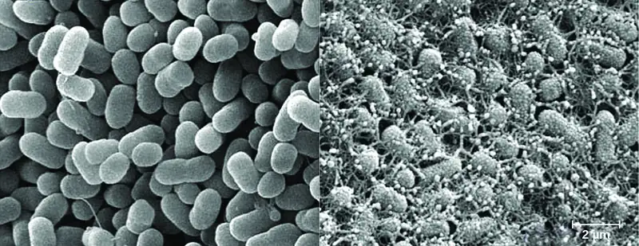
Gastrointestinal (GI) diseases are so common that, unfortunately, most people have had first-hand experience with the unpleasant symptoms, such as diarrhea, vomiting, and abdominal discomfort. The causes of gastrointestinal illness can vary widely, but such diseases can be grouped into two categories: those caused by infection (the growth of a pathogen in the GI tract) or intoxication (the presence of a microbial toxin in the GI tract).
Foodborne pathogens like Escherichia coli O157:H7 are among the most common sources of gastrointestinal disease. Contaminated food and water have always posed a health risk for humans, but in today’s global economy, outbreaks can occur on a much larger scale. E. coli O157:H7 is a potentially deadly strain of E. coli with a history of contaminating meat and produce that are not properly processed. The source of an E. coli O157:H7 outbreak can be difficult to trace, especially if the contaminated food is processed in a foreign country. Once the source is identified, authorities may issue recalls of the contaminated food products, but by then there are typically numerous cases of food poisoning, some of them fatal.
24.1 Anatomy and Normal Microbiota of the Digestive System¶
Learning Objectives
By the end of this section, you will be able to:
- Describe the major anatomical features of the human digestive system
- Describe the normal microbiota of various regions in the human digestive system
- Explain how microorganisms overcome the defenses of the digestive tract to cause infection or intoxication
- Describe general signs and symptoms associated with infections of the digestive system
Clinical Focus: Part 1
After a morning of playing outside, four-year-old Carli ran inside for lunch. After taking a bite of her fried egg, she pushed it away and whined, “It’s too slimy, Mommy. I don’t want any more.” But her mother, in no mood for games, curtly replied that if she wanted to go back outside she had better finish her lunch. Reluctantly, Carli complied, trying hard not to gag as she choked down the runny egg.
That night, Carli woke up feeling nauseated. She cried for her parents and then began to vomit. Her parents tried to comfort her, but she continued to vomit all night and began to have diarrhea and run a fever. By the morning, her parents were very worried. They rushed her to the emergency room.
- What could have caused Carli’s signs and symptoms?
Jump to the next Clinical Focus box.
The human digestive system, or the gastrointestinal (GI) tract, begins with the mouth and ends with the anus. The parts of the mouth include the teeth, the gums, the tongue, the oral vestibule (the space between the gums, lips, and teeth), and the oral cavity proper (the space behind the teeth and gums). Other parts of the GI tract are the pharynx, esophagus, stomach, small intestine, large intestine, rectum, and anus (Figure 24.2). Accessory digestive organs include the salivary glands, liver, gallbladder, spleen, and pancreas.
The digestive system contains normal microbiota, including archaea, bacteria, fungi, protists, and even viruses. Because this microbiota is important for normal functioning of the digestive system, alterations to the microbiota by antibiotics or diet can be harmful. Additionally, the introduction of pathogens to the GI tract can cause infections and diseases. In this section, we will review the microbiota found in a healthy digestive tract and the general signs and symptoms associated with oral and GI infections.
![Diagram of the digestive system. The system begins with the mouth and tongue. There are salivary glands in this region: the sublingual gland is under the tongue, the submandibular gland is below the jaw and the parotid gland is in the very back of the mouth. The mouth leads to the pharynx (a tube) that leads to the esophagus, that leads to the stomach, that leads to the small intestines. The small intestine is divided into 3 regions: first is the duodenum, next is the jejunim and finally the ileum. This leads to the large intestines which is divided into regions: first the cecum, then the ascending colon, then the transverse colon, then the descending colon, then the sigmoid colon, and finally the rectum, anal canal and anus. The appendix is a small projection off the cecum. Also part of the digestive system is the large liver (above and to the right of the stomach), the gallbladder (a small sac under the liver), the pancrease (a structure below and behind the stomach) and the spleen (a structure below and to the left of the stomach).](img/osc-microbio-24-01-gitract.webp)
Anatomy and Normal Microbiota of the Oral Cavity¶
Food enters the digestive tract through the mouth, where mechanical digestion (by chewing) and chemical digestion (by enzymes in saliva) begin. Within the mouth are the tongue, teeth, and salivary glands, including the parotid, sublingual, and submandibular glands (Figure 24.3). The salivary glands produce saliva, which lubricates food and contains digestive enzymes.
![a) Structures of the head and neck: lips, jaw, nasal cavity (large space behind the nose), oral cavity (space in the mouth), tongue, uvula (structure in at the back of the mouth), pharyx (tube at the back of the mouth), esophagus (the pharyx is the top part of this tube which is now called the esophagus in the throat), and the larynx (this is also continuous with the pharynx but leads to the respiratory system). B) Components of the mouth region: teeth, sublingual gland (Below the tongue), submandibular gland (at the back and to the bottom of the mouth), and the parotid gland (a large gland at the very back of the mouth).](img/osc-microbio-24-01-oralcavity.webp)
The structure of a tooth (Figure 24.4) begins with the visible outer surface, called the crown, which has to be extremely hard to withstand the force of biting and chewing. The crown is covered with enamel, which is the hardest material in the body. Underneath the crown, a layer of relatively hard dentin extends into the root of the tooth around the innermost pulp cavity, which includes the pulp chamber at the top of the tooth and pulp canal, or root canal, located in the root. The pulp that fills the pulp cavity is rich in blood vessels, lymphatic vessels, connective tissue, and nerves. The root of the tooth and some of the crown are covered with cementum, which works with the periodontal ligament to anchor the tooth in place in the jaw bone. The soft tissues surrounding the teeth and bones are called gums, or gingiva. The gingival space or gingival crevice is located between the gums and teeth.
![Structure of a tooth. The part above the gums (gingiva) is called the crown, the part below the gingiva is the root. The very top of the crown is a thick enamel, this is very thick at the region above the gingiva and much thinner in the root. The next layer in is the dentin and this is equally thick in both the crown and root. In the very center is the pulp which contains the pulp canal (root canal) and nerve and blood vessels. The root sits mainly in the bone region. There is a small space where the tooth extends past the gingiva, this is called the gingival crevice.](img/osc-microbio-24-01-tooth.webp)
Microbes such as bacteria and archaea are abundant in the mouth and coat all of the surfaces of the oral cavity. However, different structures, such as the teeth or cheeks, host unique communities of both aerobic and anaerobic microbes. Some factors appear to work against making the mouth hospitable to certain microbes. For example, chewing allows microbes to mix better with saliva so they can be swallowed or spit out more easily. Saliva also contains enzymes, including lysozyme, which can damage microbial cells. Recall that lysozyme is part of the first line of defense in the innate immune system and cleaves the β-(1,4) glycosidic linkages between N-acetylglucosamine (NAG) and N-acetylmuramic acid (NAM) in bacterial peptidoglycan (see Chemical Defenses). Additionally, fluids containing immunoglobulins and phagocytic cells are produced in the gingival spaces. Despite all of these chemical and mechanical activities, the mouth supports a large microbial community.
Check Your Understanding
- What factors make the mouth inhospitable for certain microbes?
Anatomy and Normal Microbiota of the GI Tract¶
As food leaves the oral cavity, it travels through the pharynx, or the back of the throat, and moves into the esophagus, which carries the food from the pharynx to the stomach without adding any additional digestive enzymes. The stomach produces mucus to protect its lining, as well as digestive enzymes and acid to break down food. Partially digested food then leaves the stomach through the pyloric sphincter, reaching the first part of the small intestine called the duodenum. Pancreatic juice, which includes enzymes and bicarbonate ions, is released into the small intestine to neutralize the acidic material from the stomach and to assist in digestion. Bile, produced by the liver but stored in the gallbladder, is also released into the small intestine to emulsify fats so that they can travel in the watery environment of the small intestine. Digestion continues in the small intestine, where the majority of nutrients contained in the food are absorbed. Simple columnar epithelial cells called enterocytes line the lumen surface of the small intestinal folds called villi. Each enterocyte has smaller microvilli (cytoplasmic membrane extensions) on the cellular apical surface that increase the surface area to allow more absorption of nutrients to occur (Figure 24.5).
![The small intestines with increasing magnification. A) is a diagram and b), c), and d) are micrographs of each magnification. The micrograph of the larges magnification shows a pink region on the bottom with a deeply waved darker pink region at the surface; the top of the image is clear. There are some darker patches in the bottom layer labeled Peyer’s patches. The diagram sows a tube lined with three layers of muscle; blood vessels connected to the outside of the tube. A cutout of the tube shows circular folds along the diameter of the tube. These folds contain deeply lobed villi. The empty space in the tube is labeled lumen. The next layer of magnification is one of the vili. The micrograph is filled with pink layers folding back and forth. The diagram shows two folds. The surface of the fold is covered with absorptive cells and some goblet cells. Between the folds is further indent labeled intestinal crypt. Inside the folds are capillaries, arteries, and lymphatic vesicles. At the very bottom of the structure (below the blood and lymph vessels, are a few duodenal glands. The final close-up shows finger-shapes in a row on the surface of a cell. These are labeled microvilli (brush border) on the diagram.](img/osc-microbio-24-01-villi.webp)
Digested food leaves the small intestine and moves into the large intestine, or colon, where there is a more diverse microbiota. Near this junction, there is a small pouch in the large intestine called the cecum, which attaches to the appendix. Further digestion occurs throughout the colon and water is reabsorbed, then waste is excreted through the rectum, the last section of the colon, and out of the body through the anus (Figure 24.2).
The environment of most of the GI tract is harsh, which serves two purposes: digestion and immunity. The stomach is an extremely acidic environment (pH 1.5–3.5) due to the gastric juices that break down food and kill many ingested microbes; this helps prevent infection from pathogens. The environment in the small intestine is less harsh and is able to support microbial communities. Microorganisms present in the small intestine can include lactobacilli, diptherioids and the fungus Candida. On the other hand, the large intestine (colon) contains a diverse and abundant microbiota that is important for normal function. These microbes include Bacteriodetes (especially the genera Bacteroides and Prevotella) and Firmicutes (especially members of the genus Clostridium). Methanogenic archaea and some fungi are also present, among many other species of bacteria. These microbes all aid in digestion and contribute to the production of feces, the waste excreted from the digestive tract, and flatus, the gas produced from microbial fermentation of undigested food. They can also produce valuable nutrients. For example, lactic acid bacteria such as bifidobacteria can synthesize vitamins, such as vitamin B12, folate, and riboflavin, that humans cannot synthesize themselves. E. coli found in the intestine can also break down food and help the body produce vitamin K, which is important for blood coagulation.
The GI tract has several other methods of reducing the risk of infection by pathogens. Small aggregates of underlying lymphoid tissue in the ileum, called Peyer’s patches (Figure 24.5), detect pathogens in the intestines via microfold (M) cells, which transfer antigens from the lumen of the intestine to the lymphocytes on Peyer’s patches to induce an immune response. The Peyer’s patches then secrete IgA and other pathogen-specific antibodies into the intestinal lumen to help keep intestinal microbes at safe levels. Goblet cells, which are modified simple columnar epithelial cells, also line the GI tract (Figure 24.6). Goblet cells secrete a gel-forming mucin, which is the major component of mucus. The production of a protective layer of mucus helps reduce the risk of pathogens reaching deeper tissues.
The constant movement of materials through the gastrointestinal tract also helps to move transient pathogens out of the body. In fact, feces are composed of approximately 25% microbes, 25% sloughed epithelial cells, 25% mucus, and 25% digested or undigested food. Finally, the normal microbiota provides an additional barrier to infection via a variety of mechanisms. For example, these organisms outcompete potential pathogens for space and nutrients within the intestine. This is known as competitive exclusion. Members of the microbiota may also secrete protein toxins known as bacteriocins that are able to bind to specific receptors on the surface of susceptible bacteria.
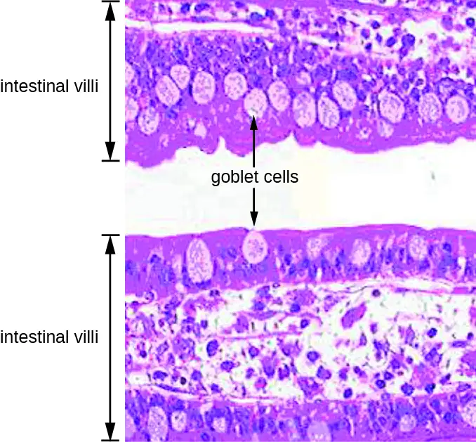
Check Your Understanding
- Compare and contrast the microbiota of the small and large intestines.
General Signs and Symptoms of Oral and GI Disease¶
Despite numerous defense mechanisms that protect against infection, all parts of the digestive tract can become sites of infection or intoxication. The term food poisoning is sometimes used as a catch-all for GI infections and intoxications, but not all forms of GI disease originate with foodborne pathogens or toxins.
In the mouth, fermentation by anaerobic microbes produces acids that damage the teeth and gums. This can lead to tooth decay, cavities, and periodontal disease, a condition characterized by chronic inflammation and erosion of the gums. Additionally, some pathogens can cause infections of the mucosa, glands, and other structures in the mouth, resulting in inflammation, sores, cankers, and other lesions. An open sore in the mouth or GI tract is typically called an ulcer.
Infections and intoxications of the lower GI tract often produce symptoms such as nausea, vomiting, diarrhea, aches, and fever. In some cases, vomiting and diarrhea may cause severe dehydration and other complications that can become serious or fatal. Various clinical terms are used to describe gastrointestinal symptoms. For example, gastritis is an inflammation of the stomach lining that results in swelling and enteritis refers to inflammation of the intestinal mucosa. When the inflammation involves both the stomach lining and the intestinal lining, the condition is called gastroenteritis. Inflammation of the liver is called hepatitis. Inflammation of the colon, called colitis, commonly occurs in cases of food intoxication. Because an inflamed colon does not reabsorb water as effectively as it normally does, stools become watery, causing diarrhea. Damage to the epithelial cells of the colon can also cause bleeding and excess mucus to appear in watery stools, a condition called dysentery.
Check Your Understanding
- List possible causes and signs and symptoms of food poisoning.
24.2 Microbial Diseases of the Mouth and Oral Cavity¶
Learning Objectives
By the end of this section, you will be able to:
- Explain the role of microbial activity in diseases of the mouth and oral cavity
- Compare the major characteristics of specific oral diseases and infections
Despite the presence of saliva and the mechanical forces of chewing and eating, some microbes thrive in the mouth. These microbes can cause damage to the teeth and can cause infections that have the potential to spread beyond the mouth and sometimes throughout the body.
Dental Caries¶
Cavities of the teeth, known clinically as dental caries, are microbial lesions that cause damage to the teeth. Over time, the lesion can grow through the outer enamel layer to infect the underlying dentin or even the innermost pulp. If dental caries are not treated, the infection can become an abscess that spreads to the deeper tissues of the teeth, near the roots, or to the bloodstream.
Tooth decay results from the metabolic activity of microbes that live on the teeth. A layer of proteins and carbohydrates forms when clean teeth come into contact with saliva. Microbes are attracted to this food source and form a biofilm called plaque. The most important cariogenic species in these biofilms is Streptococcus mutans. When sucrose, a disaccharide sugar from food, is broken down by bacteria in the mouth, glucose and fructose are produced. The glucose is used to make dextran, which is part of the extracellular matrix of the biofilm. Fructose is fermented, producing organic acids such as lactic acid. These acids dissolve the minerals of the tooth, including enamel, even though it is the hardest material in the body. The acids work even more quickly on exposed dentin (Figure 24.7). Over time, the plaque biofilm can become thick and eventually calcify. When a heavy plaque deposit becomes hardened in this way, it is called tartar or dental calculus (Figure 24.8). These substantial plaque biofilms can include a variety of bacterial species, including Streptococcus and Actinomyces species.

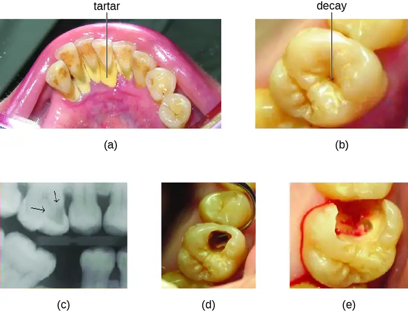
Some tooth decay is visible from the outside, but it is not always possible to see all decay or the extent of the decay. X-ray imaging is used to produce radiographs that can be studied to look for deeper decay and damage to the root or bone (Figure 24.8). If not detected, the decay can reach the pulp or even spread to the bloodstream. Painful abscesses can develop.
To prevent tooth decay, prophylactic treatment and good hygiene are important. Regular tooth brushing and flossing physically removes microbes and combats microbial growth and biofilm formation. Toothpaste contains fluoride, which becomes incorporated into the hydroxyapatite of tooth enamel, protecting it against acidity caused by fermentation of mouth microbiota. Fluoride is also bacteriostatic, thus slowing enamel degradation. Antiseptic mouthwashes commonly contain plant-derived phenolics like thymol and eucalyptol and/or heavy metals like zinc chloride (see Using Chemicals to Control Microorganisms). Phenolics tend to be stable and persistent on surfaces, and they act through denaturing proteins and disrupting membranes.
Regular dental cleanings allow for the detection of decay at early stages and the removal of tartar. They may also help to draw attention to other concerns, such as damage to the enamel from acidic drinks. Reducing sugar consumption may help prevent damage that results from the microbial fermentation of sugars. Additionally, sugarless candies or gum with sugar alcohols (such as xylitol) can reduce the production of acids because these are fermented to nonacidic compounds (although excess consumption may lead to gastrointestinal distress). Fluoride treatment or ingesting fluoridated water strengthens the minerals in teeth and reduces the incidence of dental caries.
If caries develop, prompt treatment prevents worsening. Smaller areas of decay can be drilled to remove affected tissue and then filled. If the pulp is affected, then a root canal may be needed to completely remove the infected tissues to avoid continued spread of the infection, which could lead to painful abscesses.
Check Your Understanding
- Name some ways that microbes contribute to tooth decay.
- What is the most important cariogenic species of bacteria?
Periodontal Disease¶
In addition to damage to the teeth themselves, the surrounding structures can be affected by microbes. Periodontal disease is the result of infections that lead to inflammation and tissue damage in the structures surrounding the teeth. The progression from mild to severe periodontal disease is generally reversible and preventable with good oral hygiene.
Inflammation of the gums that can lead to irritation and bleeding is called gingivitis. When plaque accumulates on the teeth, bacteria colonize the gingival space. As this space becomes increasingly blocked, the environment becomes anaerobic. This allows a wide variety of microbes to colonize, including Porphyromonas, Streptococcus, and Actinomyces. The bacterial products, which include lipopolysaccharide (LPS), proteases, lipoteichoic acids, and others, cause inflammation and gum damage (Figure 24.9). It is possible that methanogenic archaeans (including Methanobrevibacter oralis and other Methanobrevibacter species) also contribute to disease progression as some species have been identified in patients with periodontal disease, but this has proven difficult to study.123 Gingivitis is diagnosed by visual inspection, including measuring pockets in the gums, and X-rays, and is usually treated using good dental hygiene and professional dental cleaning, with antibiotics reserved for severe cases.
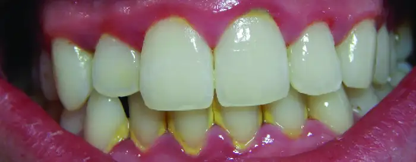
Over time, chronic gingivitis can develop into the more serious condition of periodontitis (Figure 24.10). When this happens, the gums recede and expose parts of the tooth below the crown. This newly exposed area is relatively unprotected, so bacteria can grow on it and spread underneath the enamel of the crown and cause cavities. Bacteria in the gingival space can also erode the cementum, which helps to hold the teeth in place. If not treated, erosion of cementum can lead to the movement or loss of teeth. The bones of the jaw can even erode if the infection spreads. This condition can be associated with bleeding and halitosis (bad breath). Cleaning and appropriate dental hygiene may be sufficient to treat periodontitis. However, in cases of severe periodontitis, an antibiotic may be given. Antibiotics may be given in pill form or applied directly to the gum (local treatment). Antibiotics given can include tetracycline, doxycycline, macrolides or β-lactams. Because periodontitis can be caused by a mix of microbes, a combination of antibiotics may be given.
![Diagram of a tooth with healthy gums. The crown is the part above the gums, the root is the part below the gums. The enamel is the outer layer, inside is the dentin and inside that is the pulp which contains the root canal, nerves, and blood vessels. Below the gums is bone. Gingivitis is the first stage of periodontal disease. This is when the gums become darker red and swollen. Periodontitis the gumsrecede and the enamel begins to break. In advanced periodontitis the gums recede even further and the tooth degenerates past the enamel and into the dentin and pulp.](img/osc-microbio-24-02-peridont.webp)
Trench Mouth¶
When certain bacteria, such as Prevotella intermedia, Fusobacterium species, and Treponema vicentii, are involved and periodontal disease progresses, acute necrotizing ulcerative gingivitis or trench mouth, also called Vincent's disease, can develop. This is severe periodontitis characterized by erosion of the gums, ulcers, substantial pain with chewing, and halitosis (Figure 24.11) that can be diagnosed by visual examination and X-rays. In countries with good medical and dental care, it is most common in individuals with weakened immune systems, such as patients with AIDS. In addition to cleaning and pain medication, patients may be prescribed antibiotics such as amoxicillin, amoxicillin clavulanate, clindamycin, or doxycycline.
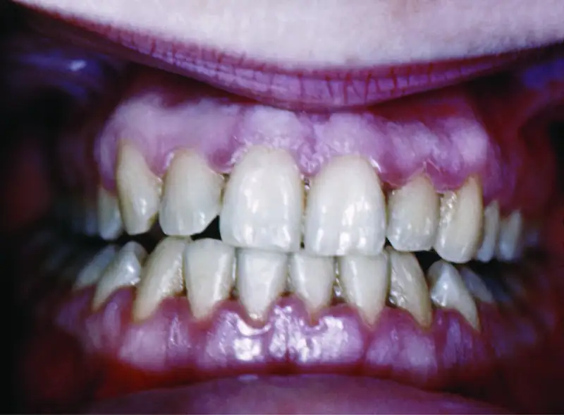
Check Your Understanding
- How does gingivitis progress to periodontitis?
Micro Connections: Healthy Mouth, Healthy Body
Good oral health promotes good overall health, and the reverse is also true. Poor oral health can lead to difficulty eating, which can cause malnutrition. Painful or loose teeth can also cause a person to avoid certain foods or eat less. Malnutrition due to dental problems is of greatest concern for the elderly, for whom it can worsen other health conditions and contribute to mortality. Individuals who have serious illnesses, especially AIDS, are also at increased risk of malnutrition from dental problems.
Additionally, poor oral health can contribute to the development of disease. Increased bacterial growth in the mouth can cause inflammation and infection in other parts of the body. For example, Streptococcus in the mouth, the main contributor to biofilms on teeth, tartar, and dental caries, can spread throughout the body when there is damage to the tissues inside the mouth, as can happen during dental work. S. mutans produces a surface adhesin known as P1, which binds to salivary agglutinin on the surface of the tooth. P1 can also bind to extracellular matrix proteins including fibronectin and collagen. When Streptococcus enters the bloodstream as a result of tooth brushing or dental cleaning, it causes inflammation that can lead to the accumulation of plaque in the arteries and contribute to the development of atherosclerosis, a condition associated with cardiovascular disease, heart attack, and stroke. In some cases, bacteria that spread through the blood vessels can lodge in the heart and cause endocarditis (an example of a focal infection).
Oral Infections¶
As noted earlier, normal oral microbiota can cause dental and periodontal infections. However, there are number of other infections that can manifest in the oral cavity when other microbes are present.
Herpetic Gingivostomatitis¶
As described in Viral Infections of the Skin and Eyes, infections by herpes simplex virus type 1 (HSV-1) frequently manifest as oral herpes, also called acute herpes labialis and characterized by cold sores on the lips, mouth, or gums. HSV-1 can also cause acute herpetic gingivostomatitis, a condition that results in ulcers of the mucous membranes inside the mouth (Figure 24.12). Herpetic gingivostomatitis is normally self-limiting except in immunocompromised patients. Like oral herpes, the infection is generally diagnosed through clinical examination, but cultures or biopsies may be obtained if other signs or symptoms suggest the possibility of a different causative agent. If treatment is needed, mouthwashes or antiviral medications such as acyclovir, famciclovir, or valacyclovir may be used.
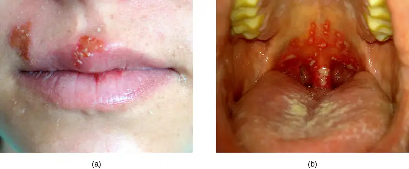
Oral Thrush¶
The yeast Candida is part of the normal human microbiota, but overgrowths, especially of Candida albicans, can lead to infections in several parts of the body. When Candida infection develops in the oral cavity, it is called oral thrush. Oral thrush is most common in infants because they do not yet have well developed immune systems and have not acquired the robust normal microbiota that keeps Candida in check in adults. Oral thrush is also common in immunodeficient patients and is a common infection in patients with AIDS.
Oral thrush is characterized by the appearance of white patches and pseudomembranes in the mouth (Figure 24.13) and can be associated with bleeding. The infection may be treated topically with nystatin or clotrimazole oral suspensions, although systemic treatment is sometimes needed. In serious cases, systemic azoles such as fluconazole or itraconazole (for strains resistant to fluconazole), may be used. Amphotericin B can also be used if the infection is severe or if the Candida species is azole-resistant.
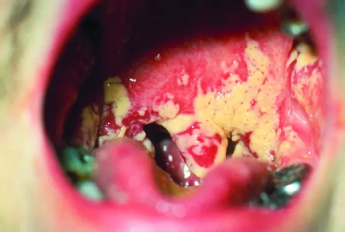
Mumps¶
The viral disease mumps is an infection of the parotid glands, the largest of the three pairs of salivary glands (Figure 24.3). The causative agent is mumps virus (MuV), a paramyxovirus with an envelope that has hemagglutinin and neuraminidase spikes. A fusion protein located on the surface of the envelope helps to fuse the viral envelope to the host cell plasma membrane.
Mumps virus is transmitted through respiratory droplets or through contact with contaminated saliva, making it quite contagious so that it can lead easily to epidemics. It causes fever, muscle pain, headache, pain with chewing, loss of appetite, fatigue, and weakness. There is swelling of the salivary glands and associated pain (Figure 24.14). The virus can enter the bloodstream (viremia), allowing it to spread to the organs and the central nervous system. The infection ranges from subclinical cases to cases with serious complications, such as encephalitis, meningitis, and deafness. Inflammation of the pancreas, testes, ovaries, and breasts may also occur and cause permanent damage to those organs; despite these complications, a mumps infection rarely cause sterility.
Mumps can be recognized based on clinical signs and symptoms, and a diagnosis can be confirmed with laboratory testing. The virus can be identified using culture or molecular techniques such as RT-PCR. Serologic tests are also available, especially enzyme immunoassays that detect antibodies. There is no specific treatment for mumps, so supportive therapies are used. The most effective way to avoid infection is through vaccination. Although mumps used to be a common childhood disease, it is now rare in the United States due to vaccination with the measles, mumps, and rubella (MMR) vaccine.
Check Your Understanding
- Compare and contrast the signs and symptoms of herpetic gingivostomatitis, oral thrush, and mumps.
Disease Profile: Oral Infections
Infections of the mouth and oral cavity can be caused by a variety of pathogens, including bacteria, viruses, and fungi. Many of these infections only affect the mouth, but some can spread and become systemic infections. Figure 24.15 summarizes the main characteristics of common oral infections.
![Table titled: Oral Infections. Columns: Disease, Pathogen, Signs and Symptoms, Transmission, Diagnostic Tests, Antimicrobial Drugs. Dental caries; Streptococcus mutans; Discoloration, softening, cavities in teeth; Non-transmissible; caused by bacteria of the normal oral microbiota; Visual examinations, X-rays Oral antiseptics (e.g., Listerine). Gingivitis and periodontitis; Porphyromonas, Streptococcus, Actinomyces; Inflammation and erosion of gums, bleeding, halitosis; erosion of cementum leading to tooth loss in advanced infections; Non-transmissible; caused by bacteria of the normal oral microbiota; Visual examination, X-rays, measuring pockets in gums; Tetracycline, doxycycline, macrolides or beta-lactams. Mixture of antibiotics may be given. Herpetic gingivostomatitis; Herpes simplex virus type 1 (HSV-1); Lesions in mucous membranes of mouth Contact with saliva or lesions of an infected person Culture or biopsy; Acyclovir, famcyclovir, valacyclovir. Mumps; Mumps virus (a paramyxovirus); Swelling of parotid glands, fever, headache, muscle pain, weakness, fatigue, loss of appetite, pain while chewing; in serious cases, encephalitis, meningitis, and inflammation of testes, ovaries, and breasts; Contact with saliva or respiratory droplets of an infected person; Virus culture or serologic tests for antibodies, enzyme immunoassay, RT-PCR; None for treatment; MMR vaccine for prevention. Oral thrush; Candida albicans, other Candida spp.; White patches and pseudomembranes in mouth, may cause bleeding; Nontransmissible; caused by overgrowth of Candida spp. in the normal oral microbiota; primarily affects infants and the immunocompromised. Microscopic analysis of oral samples; Clotrimazole, nystatin, fluconazole, or itraconazole; amphotericin B in severe cases. Trench mouth (acute necrotizing ulcerative gingivitis); Prevotella intermedia Fusobacterium species, Treponema vincentii, others; Erosion of gums, ulcers, substantial pain with chewing, halitosis; Nontransmissible; caused by members of the normal oral microbiota; Visual examinations, X-rays; Amoxicillin, amoxicillin clavulanate, clindamycin, or doxycycline.](img/osc-microbio-24-02-oralinftbl.webp)
24.3 Bacterial Infections of the Gastrointestinal Tract¶
Learning Objectives
By the end of this section, you will be able to:
- Identify the most common bacteria that can cause infections of the GI tract
- Compare the major characteristics of specific bacterial diseases affecting the GI tract
A wide range of gastrointestinal diseases are caused by bacterial contamination of food. Recall that foodborne disease can arise from either infection or intoxication. In both cases, bacterial toxins are typically responsible for producing disease signs and symptoms. The distinction lies in where the toxins are produced. In an infection, the microbial agent is ingested, colonizes the gut, and then produces toxins that damage host cells. In an intoxication, bacteria produce toxins in the food before it is ingested. In either case, the toxins cause damage to the cells lining the gastrointestinal tract, typically the colon. This leads to the common signs and symptoms of diarrhea or watery stool and abdominal cramps, or the more severe dysentery. Symptoms of foodborne diseases also often include nausea and vomiting, which are mechanisms the body uses to expel the toxic materials.
Most bacterial gastrointestinal illness is short-lived and self-limiting; however, loss of fluids due to severe diarrheal illness can lead to dehydration that can, in some cases, be fatal without proper treatment. Oral rehydration therapy with electrolyte solutions is an essential aspect of treatment for most patients with GI disease, especially in children and infants.
Staphylococcal Food Poisoning¶
Staphylococcal food poisoning is one form of food intoxication. When Staphylococcus aureus grows in food, it may produce enterotoxins that, when ingested, can cause symptoms such as nausea, diarrhea, cramping, and vomiting within one to six hours. In some severe cases, it may cause headache, dehydration, and changes in blood pressure and heart rate. Signs and symptoms resolve within 24 to 48 hours. S. aureus is often associated with a variety of raw or undercooked and cooked foods including meat (e.g., canned meat, ham, and sausages) and dairy products (e.g., cheeses, milk, and butter). It is also commonly found on hands and can be transmitted to prepared foods through poor hygiene, including poor handwashing and the use of contaminated food preparation surfaces, such as cutting boards. The greatest risk is for food left at a temperature below 60 °C (140 °F), which allows the bacteria to grow. Cooked foods should generally be reheated to at least 60 °C (140 °F) for safety and most raw meats should be cooked to even higher internal temperatures (Figure 24.16).
![This figure shows a large thermometer with Fahrenheit and Celsius marks for freezer temperature, refrigerator temperature, safe holding temperature for cooked foods, and safe internal cooking temperatures for different meets and prepared meals. The figure identifies the danger zone between refrigerator temperature of 40 degrees Fahrenheit or 4 degree Celsius and the safe holding temperature of 140 degrees Fahrenheit or 60 degrees Celsius for cooked foods. It is within this danger zone that microbial growth presents a risk for foodborne diseases.](img/osc-microbio-24-03-dangerzone.webp)
There are at least 21 Staphylococcal enterotoxins and Staphylococcal enterotoxin-like toxins that can cause food intoxication. The enterotoxins are proteins that are resistant to low pH, allowing them to pass through the stomach. They are heat stable and are not destroyed by boiling at 100 °C. Even though the bacterium itself may be killed, the enterotoxins alone can cause vomiting and diarrhea, although the mechanisms are not fully understood. At least some of the symptoms may be caused by the enterotoxin functioning as a superantigen and provoking a strong immune response by activating T cell proliferation.
The rapid onset of signs and symptoms helps to diagnose this foodborne illness. Because the bacterium does not need to be present for the toxin to cause symptoms, diagnosis is confirmed by identifying the toxin in a food sample or in biological specimens (feces or vomitus) from the patient. Serological techniques, including ELISA, can also be used to identify the toxin in food samples.
The condition generally resolves relatively quickly, within 24 hours, without treatment. In some cases, supportive treatment in a hospital may be needed.
Check Your Understanding
- How can S. aureus cause food intoxication?
Shigellosis (Bacillary Dysentery)¶
When gastrointestinal illness is associated with the rod-shaped, gram-negative bacterium Shigella, it is called bacillary dysentery, or shigellosis. Infections can be caused by S. dysenteriae, S. flexneri, S. boydii, and/or S. sonnei that colonize the GI tract. Shigellosis can be spread from hand to mouth or through contaminated food and water. Most commonly, it is transmitted through the fecal-oral route.
Shigella bacteria invade intestinal epithelial cells. When taken into a phagosome, they can escape and then live within the cytoplasm of the cell or move to adjacent cells. As the organisms multiply, the epithelium and structures with M cells of the Peyer’s patches in the intestine may become ulcerated and cause loss of fluid. Stomach cramps, fever, and watery diarrhea that may also contain pus, mucus, and/or blood often develop. More severe cases may result in ulceration of the mucosa, dehydration, and rectal bleeding. Additionally, patients may later develop hemolytic uremic syndrome (HUS), a serious condition in which damaged blood cells build up in the kidneys and may cause kidney failure, or reactive arthritis, a condition in which arthritis develops in multiple joints following infection. Patients may also develop chronic post-infection irritable bowel syndrome (IBS).
S. dysenteriae type 1 is able to produce Shiga toxin, which targets the endothelial cells of small blood vessels in the small and large intestine by binding to a glycosphingolipid. Once inside the endothelial cells, the toxin targets the large ribosomal subunit, thus affecting protein synthesis of these cells. Hemorrhaging and lesions in the colon can result. The toxin can target the kidney’s glomerulus, the blood vessels where filtration of blood in the kidney begins, thus resulting in HUS.
Stool samples, which should be processed promptly, are analyzed using serological or molecular techniques. One common method is to perform immunoassays for S. dysenteriae. (Other methods that can be used to identify Shigella include API test strips, Enterotube systems, or PCR testing. The presence of white blood cells and blood in fecal samples occurs in about 70% of patients4 (Figure 24.17). Severe cases may require antibiotics such as ciprofloxacin and azithromycin, but these must be carefully prescribed because resistance is increasingly common.
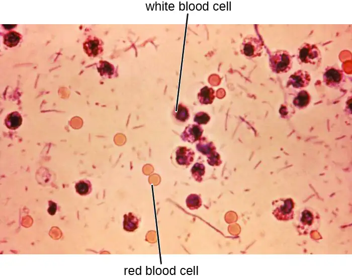
Check Your Understanding
- Compare and contrast Shigella infections and intoxications.
Salmonellosis¶
Salmonella gastroenteritis, also called salmonellosis, is caused by the rod-shaped, gram-negative bacterium Salmonella. Two species, S. enterica and S. bongori, cause disease in humans, but S. enterica is the most common. The most common serotypes of S. enterica are Enteritidis and Typhi. We will discuss typhoid fever caused by serotypes Typhi and Paratyphi A separately. Here, we will focus on salmonellosis caused by other serotypes.
Salmonella is a part of the normal intestinal microbiota of many individuals. However, salmonellosis is caused by exogenous agents, and infection can occur depending on the serotype, size of the inoculum, and overall health of the host. Infection is caused by ingestion of contaminated food, handling of eggshells, or exposure to certain animals. Salmonella is part of poultry’s microbiota, so exposure to raw eggs and raw poultry can increase the risk of infection. Handwashing and cooking foods thoroughly greatly reduce the risk of transmission. Salmonella bacteria can survive freezing for extended periods but cannot survive high temperatures.
Once the bacteria are ingested, they multiply within the intestines and penetrate the epithelial mucosal cells via M cells where they continue to grow (Figure 24.18). They trigger inflammatory processes and the hypersecretion of fluids. Once inside the body, they can persist inside the phagosomes of macrophages. Salmonella can cross the epithelial cell membrane and enter the bloodstream and lymphatic system. Some strains of Salmonella also produce an enterotoxin that can cause an intoxication.
Infected individuals develop fever, nausea, abdominal cramps, vomiting, headache, and diarrhea. These signs and symptoms generally last a few days to a week. According to the Centers for Disease Control and Prevention (CDC), there are 1,000,000 cases annually, with 380 deaths each year.5 However, because the disease is usually self-limiting, many cases are not reported to doctors and the overall incidence may be underreported. Diagnosis involves culture followed by serotyping and DNA fingerprinting if needed. Positive results are reported to the CDC. When an unusual serotype is detected, samples are sent to the CDC for further analysis. Serotyping is important for determining treatment. Oral rehydration therapy is commonly used. Antibiotics are only recommended for serious cases. When antibiotics are needed, as in immunocompromised patients, fluoroquinolones, third-generation cephalosporins, and ampicillin are recommended. Antibiotic resistance is a serious concern.
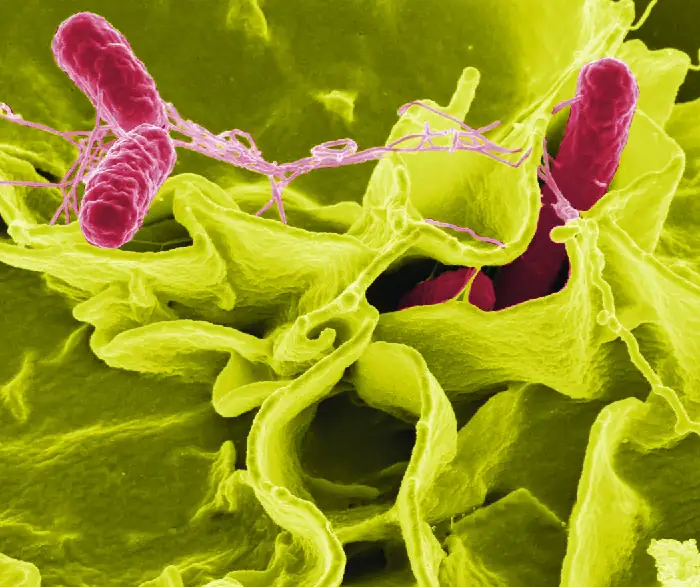
Typhoid Fever¶
Certain serotypes of S. enterica, primarily serotype Typhi (S. typhi) but also Paratyphi, cause a more severe type of salmonellosis called typhoid fever. This serious illness, which has an untreated mortality rate of 10%, causes high fever, body aches, headache, nausea, lethargy, and a possible rash.
Some individuals carry S. typhi without presenting signs or symptoms (known as asymptomatic carriers) and continually shed them through their feces. These carriers often have the bacteria in the gallbladder or intestinal epithelium. Individuals consuming food or water contaminated with these feces can become infected.
S. typhi penetrate the intestinal mucosa, grow within the macrophages, and are transported through the body, most notably to the liver and gallbladder. Eventually, the macrophages lyse, releasing S. typhi into the bloodstream and lymphatic system. Mortality can result from ulceration and perforation of the intestine. A wide range of complications, such as pneumonia and jaundice, can occur with disseminated disease.
S. typhi have Salmonella pathogenicity islands (SPIs) that contain the genes for many of their virulence factors. Two examples of important typhoid toxins are the Vi antigen, which encodes for capsule production, and chimeric A2B5 toxin, which causes many of the signs and symptoms of the acute phase of typhoid fever.
Clinical examination and culture are used to make the diagnosis. The bacteria can be cultured from feces, urine, blood, or bone marrow. Serology, including ELISA, is used to identify the most pathogenic strains, but confirmation with DNA testing or culture is needed. A PCR test can also be used, but is not widely available.
The recommended antibiotic treatment involves fluoroquinolones, ceftriaxone, and azithromycin. Individuals must be extremely careful to avoid infecting others during treatment. Typhoid fever can be prevented through vaccination for individuals traveling to parts of the world where it is common.
Check Your Understanding
- Why is serotyping particularly important in Salmonella infections and typhoid fever?
Eye on Ethics: Typhoid Mary
Mary Mallon was an Irish immigrant who worked as a cook in New York in the early 20th century. Over seven years, from 1900 to 1907, Mallon worked for a number of different households, unknowingly spreading illness to the people who lived in each one. In 1906, one family hired George Soper, an expert in typhoid fever epidemics, to determine the cause of the illnesses in their household. Eventually, Soper tracked Mallon down and directly linked 22 cases of typhoid fever to her. He discovered that Mallon was a carrier for typhoid but was immune to it herself. Although active carriers had been recognized before, this was the first time that an asymptomatic carrier of infection had been identified.
Because she herself had never been ill, Mallon found it difficult to believe she could be the source of the illness. She fled from Soper and the authorities because she did not want to be quarantined or forced to give up her profession, which was relatively well paid for someone with her background. However, Mallon was eventually caught and kept in an isolation facility in the Bronx, where she remained until 1910, when the New York health department released her under the condition that she never again work with food. Unfortunately, Mallon did not comply, and she soon began working as a cook again. After new cases began to appear that resulted in the death of two individuals, the authorities tracked her down again and returned her to isolation, where she remained for 23 more years until her death in 1938. Epidemiologists were able to trace 51 cases of typhoid fever and three deaths directly to Mallon, who is unflatteringly remembered as “Typhoid Mary.”
The Typhoid Mary case has direct correlations in the health-care industry. Consider Kaci Hickox, an American nurse who treated Ebola patients in West Africa during the 2014 epidemic. After returning to the United States, Hickox was quarantined against her will for three days and later found not to have Ebola. Hickox vehemently opposed the quarantine. In an editorial published in the British newspaper The Guardian,6 Hickox argued that quarantining asymptomatic health-care workers who had not tested positive for a disease would not only prevent such individuals from practicing their profession, but discourage others from volunteering to work in disease-ridden areas where health-care workers are desperately needed.
What is the responsibility of an individual like Mary Mallon to change her behavior to protect others? What happens when an individual believes that she is not a risk, but others believe that she is? How would you react if you were in Mallon’s shoes and were placed in a quarantine you did not believe was necessary, at the expense of your own freedom and possibly your career? Would it matter if you were definitely infected or not?
E. coli Infections¶
The gram-negative rod Escherichia coli is a common member of the normal microbiota of the colon. Although the vast majority of E. coli strains are helpful commensal bacteria, some can be pathogenic and may cause dangerous diarrheal disease. The pathogenic strains have additional virulence factors such as type 1 fimbriae that promote colonization of the colon or may produce toxins (see Virulence Factors of Bacterial and Viral Pathogens). These virulence factors are acquired through horizontal gene transfer.
Extraintestinal disease can result if the bacteria spread from the gastrointestinal tract. Although these bacteria can be spread from person to person, they are often acquired through contaminated food or water. There are six recognized pathogenic groups of E. coli, but we will focus here on the four that are most commonly transmitted through food and water.
Enterotoxigenic E. coli (ETEC), also known as traveler’s diarrhea, causes diarrheal illness and is common in less developed countries. In Mexico, ETEC infection is called Montezuma’s Revenge. Following ingestion of contaminated food or water, infected individuals develop a watery diarrhea, abdominal cramps, malaise (a feeling of being unwell), and a low fever. ETEC produces a heat-stable enterotoxin similar to cholera toxin, and adhesins called colonization factors that help the bacteria to attach to the intestinal wall. Some strains of ETEC also produce heat-labile toxins. The disease is usually relatively mild and self-limiting. Diagnosis involves culturing and PCR. If needed, antibiotic treatment with fluoroquinolones, doxycycline, rifaximin, and trimethoprim-sulfamethoxazole (TMP/SMZ) may shorten infection duration. However, antibiotic resistance is a problem.
Enteroinvasive E. coli (EIEC) is very similar to shigellosis, including its pathogenesis of intracellular invasion into intestinal epithelial tissue. This bacterium carries a large plasmid that is involved in epithelial cell penetration. The illness is usually self-limiting, with symptoms including watery diarrhea, chills, cramps, malaise, fever, and dysentery. Culturing and PCR testing can be used for diagnosis. Antibiotic treatment is not recommended, so supportive therapy is used if needed.
Enteropathogenic E. coli (EPEC) can cause a potentially fatal diarrhea, especially in infants and those in less developed countries. Fever, vomiting, and diarrhea can lead to severe dehydration. These E. coli inject a protein (Tir) that attaches to the surface of the intestinal epithelial cells and triggers rearrangement of host cell actin from microvilli to pedestals. Tir also happens to be the receptor for Intimin, a surface protein produced by EPEC, thereby allowing E. coli to “sit” on the pedestal. The genes necessary for this pedestal formation are encoded on the locus for enterocyte effacement (LEE) pathogenicity island. As with ETEC, diagnosis involves culturing and PCR. Treatment is similar to that for ETEC.
The most dangerous strains are enterohemorrhagic E. coli (EHEC), which are the strains capable of causing epidemics. In particular, the strain O157:H7 has been responsible for several recent outbreaks. Recall that the O and H refer to surface antigens that contribute to pathogenicity and trigger a host immune response (“O” refers to the O-side chain of the lipopolysaccharide and the “H” refers to the flagella). Similar to EPEC, EHEC also forms pedestals. EHEC also produces a Shiga-like toxin. Because the genome of this bacterium has been sequenced, it is known that the Shiga toxin genes were most likely acquired through transduction (horizontal gene transfer). The Shiga toxin genes originated from Shigella dysenteriae. Prophage from a bacteriophage that previously infected Shigella integrated into the chromosome of E. coli. The Shiga-like toxin is often called verotoxin.
EHEC can cause disease ranging from relatively mild to life-threatening. Symptoms include bloody diarrhea with severe cramping, but no fever. Although it is often self-limiting, it can lead to hemorrhagic colitis and profuse bleeding. One possible complication is HUS. Diagnosis involves culture, often using MacConkey with sorbitol agar to differentiate between E. coli O157:H7, which does not ferment sorbitol, and other less virulent strains of E. coli that can ferment sorbitol.
Serological typing or PCR testing also can be used, as well as genetic testing for Shiga toxin. To distinguish EPEC from EHEC, because they both form pedestals on intestinal epithelial cells, it is necessary to test for genes encoding for both the Shiga-like toxin and for the LEE. Both EPEC and EHEC have LEE, but EPEC lacks the gene for Shiga toxin. Antibiotic therapy is not recommended and may worsen HUS because of the toxins released when the bacteria are killed, so supportive therapies must be used. Table 24.1 summarizes the characteristics of the four most common pathogenic groups.
Table 24.1
| Some Pathogenic Groups of E. coli | ||||
|---|---|---|---|---|
| Group | Virulence Factors and Genes | Signs and Symptoms | Diagnostic Tests | Treatment |
| Enterotoxigenic E. coli (ETEC) | Heat stable enterotoxin similar to cholera toxin | Relatively mild, watery diarrhea | Culturing, PCR | Self-limiting; if needed, fluoroquinolones, doxycycline, rifaximin, TMP/SMZ; antibiotic resistance is a problem |
| Enteroinvasive E. coli (EIEC) | Inv (invasive plasmid) genes | Relatively mild, watery diarrhea; dysentery or inflammatory colitis may occur | Culturing, PCR; testing for inv gene; additional assays to distinguish from Shigella | Supportive therapy only; antibiotics not recommended |
| Enteropathogenic E. coli (EPEC) | Locus of enterocyte effacement (LEE) pathogenicity island | Severe fever, vomiting, nonbloody diarrhea, dehydration; potentially fatal | Culturing, PCR; detection of LEE lacking Shiga-like toxin genes | Self-limiting; if needed, fluoroquinolones, doxycycline, rifaximin (TMP/SMZ); antibiotic resistance is a problem |
| Enterohemorrhagic E. coli (EHEC) | Verotoxin | May be mild or very severe; bloody diarrhea; may result in HUS | Culturing; plate on MacConkey agar with sorbitol agar as it does not ferment sorbitol; PCR detection of LEE containing Shiga-like toxin genes | Antibiotics are not recommended due to the risk of HUS |
Check Your Understanding
- Compare and contrast the virulence factors and signs and symptoms of infections with the four main E. coli groups.
Cholera and Other Vibrios¶
The gastrointestinal disease cholera is a serious infection often associated with poor sanitation, especially following natural disasters, because it is spread through contaminated water and food that has not been heated to temperatures high enough to kill the bacteria. It is caused by Vibrio cholerae serotype O1, a gram-negative, flagellated bacterium in the shape of a curved rod (vibrio). According to the CDC, cholera causes an estimated 3 to 5 million cases and 100,000 deaths each year.7
Because V. cholerae is killed by stomach acid, relatively large doses are needed for a few microbial cells to survive to reach the intestines and cause infection. The motile cells travel through the mucous layer of the intestines, where they attach to epithelial cells and release cholera enterotoxin. The toxin is an A-B toxin with activity through adenylate cyclase (see Virulence Factors of Bacterial and Viral Pathogens). Within the intestinal cell, cyclic AMP (cAMP) levels increase, which activates a chloride channel and results in the release of ions into the intestinal lumen. This increase in osmotic pressure in the lumen leads to water also entering the lumen. As the water and electrolytes leave the body, it causes rapid dehydration and electrolyte imbalance. Diarrhea is so profuse that it is often called “rice water stool,” and patients are placed on cots with a hole in them to monitor the fluid loss (Figure 24.19).
Cholera is diagnosed by taking a stool sample and culturing for Vibrio. The bacteria are oxidase positive and show non-lactose fermentation on MacConkey agar. Gram-negative lactose fermenters will produce red colonies while non-fermenters will produce white/colorless colonies. Gram-positive bacteria will not grow on MacConkey. Lactose fermentation is commonly used for pathogen identification because the normal microbiota generally ferments lactose while pathogens do not. V. cholerae may also be cultured on thiosulfate citrate bile salts sucrose (TCBS) agar, a selective and differential media for Vibrio spp., which produce a distinct yellow colony.
Cholera may be self-limiting and treatment involves rehydration and electrolyte replenishment. Although antibiotics are not typically needed, they can be used for severe or disseminated disease. Tetracyclines are recommended, but doxycycline, erythromycin, orfloxacin, ciprofloxacin, and TMP/SMZ may be used. Recent evidence suggests that azithromycin is also a good first-line antibiotic. Good sanitation—including appropriate sewage treatment, clean supplies for cooking, and purified drinking water—is important to prevent infection (Figure 24.19)
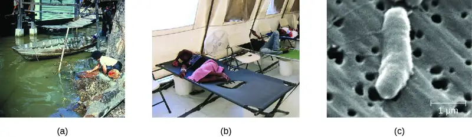
V. cholera is not the only Vibrio species that can cause disease. V. parahemolyticus is associated with consumption of contaminated seafood and causes gastrointestinal illness with signs and symptoms such as watery diarrhea, nausea, fever, chills, and abdominal cramps. The bacteria produce a heat-stable hemolysin, leading to dysentery and possible disseminated disease. It also sometimes causes wound infections. V. parahemolyticus is diagnosed using cultures from blood, stool, or a wound. As with V. cholera, selective medium (especially TCBS agar) works well. Tetracycline and ciprofloxacin can be used to treat severe cases, but antibiotics generally are not needed.
Vibrio vulnificus is found in warm seawater and, unlike V. cholerae, is not associated with poor sanitary conditions. The bacteria can be found in raw seafood, and ingestion causes gastrointestinal illness. It can also be acquired by individuals with open skin wounds who are exposed to water with high concentrations of the pathogen. In some cases, the infection spreads to the bloodstream and causes septicemia. Skin infection can lead to edema, ecchymosis (discoloration of skin due to bleeding), and abscesses. Patients with underlying disease have a high fatality rate of about 50%. It is of particular concern for individuals with chronic liver disease or who are otherwise immunodeficient because a healthy immune system can often prevent infection from developing. V. vulnificus is diagnosed by culturing for the pathogen from stool samples, blood samples, or skin abscesses. Adult patients are treated with doxycycline combined with a third generation cephalosporin or with fluoroquinolones, and children are treated with TMP/SMZ.
Two other vibrios, Aeromonas hydrophila and Plesiomonas shigelloides, are also associated with marine environments and raw seafood; they can also cause gastroenteritis. Like V. vulnificus, A. hydrophila is more often associated with infections in wounds, generally those acquired in water. In some cases, it can also cause septicemia. Other species of Aeromonas can cause illness. P. shigelloides is sometimes associated with more serious systemic infections if ingested in contaminated food or water. Culture can be used to diagnose A. hydrophila and P. shigelloides infections, for which antibiotic therapy is generally not needed. When necessary, tetracycline and ciprofloxacin, among other antibiotics, may be used for treatment of A. hydrophila, and fluoroquinolones and trimethoprim are the effective treatments for P. shigelloides.
Check Your Understanding
- How does V. cholera infection cause rapid dehydration?
Campylobacter jejuni Gastroenteritis¶
Campylobacter is a genus of gram-negative, spiral or curved bacteria. They may have one or two flagella. Campylobacter jejuni gastroenteritis, a form of campylobacteriosis, is a widespread illness that is caused by Campylobacter jejuni. The primary route of transmission is through poultry that becomes contaminated during slaughter. Handling of the raw chicken in turn contaminates cooking surfaces, utensils, and other foods. Unpasteurized milk or contaminated water are also potential vehicles of transmission. In most cases, the illness is self-limiting and includes fever, diarrhea, cramps, vomiting, and sometimes dysentery. More serious signs and symptoms, such as bacteremia, meningitis, pancreatitis, cholecystitis, and hepatitis, sometimes occur. It has also been associated with autoimmune conditions such as Guillain-Barré syndrome, a neurological disease that occurs after some infections and results in temporary paralysis. HUS following infection can also occur. The virulence in many strains is the result of hemolysin production and the presence of Campylobacter cytolethal distending toxin (CDT), a powerful deoxyribonuclease (DNase) that irreversibly damages host cell DNA.
Diagnosis involves culture under special conditions, such as elevated temperature, low oxygen tension, and often medium supplemented with antimicrobial agents. These bacteria should be cultured on selective medium (such as Campy CV, charcoal selective medium, or cefaperazone charcoal deoxycholate agar) and incubated under microaerophilic conditions for at least 72 hours at 42 °C. Antibiotic treatment is not usually needed, but erythromycin or ciprofloxacin may be used.
Peptic Ulcers¶
The gram-negative bacterium Helicobacter pylori is able to tolerate the acidic environment of the human stomach and has been shown to be a major cause of peptic ulcers, which are ulcers of the stomach or duodenum. The bacterium is also associated with increased risk of stomach cancer (Figure 24.20). According to the CDC, approximately two-thirds of the population is infected with H. pylori, but less than 20% have a risk of developing ulcers or stomach cancer. H. pylori is found in approximately 80% of stomach ulcers and in over 90% of duodenal ulcers.8
H. pylori colonizes epithelial cells in the stomach using pili for adhesion. These bacteria produce urease, which stimulates an immune response and creates ammonia that neutralizes stomach acids to provide a more hospitable microenvironment. The infection damages the cells of the stomach lining, including those that normally produce the protective mucus that serves as a barrier between the tissue and stomach acid. As a result, inflammation (gastritis) occurs and ulcers may slowly develop. Ulcer formation can also be caused by toxin activity. It has been reported that 50% of clinical isolates of H. pylori have detectable levels of exotoxin activity in vitro.9 This toxin, VacA, induces vacuole formation in host cells. VacA has no primary sequence homology with other bacterial toxins, and in a mouse model, there is a correlation between the presence of the toxin gene, the activity of the toxin, and gastric epithelial tissue damage.
Signs and symptoms include nausea, lack of appetite, bloating, burping, and weight loss. Bleeding ulcers may produce dark stools. If no treatment is provided, the ulcers can become deeper, more tissues can be involved, and stomach perforation can occur. Because perforation allows digestive enzymes and acid to leak into the body, it is a very serious condition.
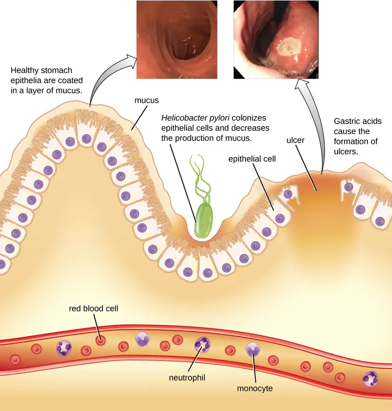
To diagnose H. pylori infection, multiple methods are available. In a breath test, the patient swallows radiolabeled urea. If H. pylori is present, the bacteria will produce urease to break down the urea. This reaction produces radiolabeled carbon dioxide that can be detected in the patient’s breath. Blood testing can also be used to detect antibodies to H. pylori. The bacteria themselves can be detected using either a stool test or a stomach wall biopsy.
Antibiotics can be used to treat the infection. However, unique to H. pylori, the recommendation from the US Food and Drug Administration is to use a triple therapy. The current protocols are 10 days of treatment with omeprazole, amoxicillin, and clarithromycin (OAC); 14 days of treatment with bismuth subsalicylate, metronidazole, and tetracycline (BMT); or 10 or 14 days of treatment with lansoprazole, amoxicillin, and clarithromycin (LAC). Omeprazole, bismuth subsalicylate, and lansoprazole are not antibiotics but are instead used to decrease acid levels because H. pylori prefers acidic environments.
Although treatment is often valuable, there are also risks to H. pylori eradication. Infection with H. pylori may actually protect against some cancers, such as esophageal adenocarcinoma and gastroesophageal reflux disease.1011
Check Your Understanding
- How does H. pylori cause peptic ulcers?
Clostridium perfringens Gastroenteritis¶
Clostridium perfringens gastroenteritis is a generally mild foodborne disease that is associated with undercooked meats and other foods. C. perfringens is a gram-positive, rod-shaped, endospore-forming anaerobic bacterium that is tolerant of high and low temperatures. At high temperatures, the bacteria can form endospores that will germinate rapidly in foods or within the intestine. Food poisoning by type A strains is common. This strain always produces an enterotoxin, sometimes also present in other strains, that causes the clinical symptoms of cramps and diarrhea. A more severe form of the illness, called pig-bel or enteritis necroticans, causes hemorrhaging, pain, vomiting, and bloating. Gangrene of the intestines may result. This form has a high mortality rate but is rare in the United States.
Diagnosis involves detecting the C. perfringens toxin in stool samples using either molecular biology techniques (PCR detection of the toxin gene) or immunology techniques (ELISA). The bacteria itself may also be detected in foods or in fecal samples. Treatment includes rehydration therapy, electrolyte replacement, and intravenous fluids. Antibiotics are not recommended because they can damage the balance of the microbiota in the gut, and there are concerns about antibiotic resistance. The illness can be prevented through proper handling and cooking of foods, including prompt refrigeration at sufficiently low temperatures and cooking food to a sufficiently high temperature.
Clostridioides difficile¶
Clostridioides difficile is a gram-positive rod that can be a commensal bacterium as part of the normal microbiota of healthy individuals. When the normal microbiota is disrupted by long-term antibiotic use, it can allow the overgrowth of this bacterium, resulting in antibiotic-associated diarrhea caused by C. difficile. Antibiotic-associated diarrhea can also be considered a nosocomial disease. Patients at the greatest risk of C. difficile infection are those who are immunocompromised, have been in health-care settings for extended periods, are older, have recently taken antibiotics, have had gastrointestinal procedures done, or use proton pump inhibitors, which reduce stomach acidity and allow proliferation of C. difficile. Because this species can form endospores, it can survive for extended periods of time in the environment under harsh conditions and is a considerable concern in health-care settings.
This bacterium produces two toxins, Clostridioides difficile toxin A (TcdA) and Clostridioides difficile toxin B (TcdB). These toxins inactivate small GTP-binding proteins, resulting in actin condensation and cell rounding, followed by cell death. Infections begin with focal necrosis, then ulceration with exudate, and can progress to pseudomembranous colitis, which involves inflammation of the colon and the development of a pseudomembrane of fibrin containing dead epithelial cells and leukocytes (Figure 24.21). Watery diarrhea, dehydration, fever, loss of appetite, and abdominal pain can result. Perforation of the colon can occur, leading to septicemia, shock, and death. C. difficile is also associated with necrotizing enterocolitis in premature babies and neutropenic enterocolitis associated with cancer therapies.
![A diagram showing the lining of the stomach. At the very bottom is a blood vessel with red blood cells, neutrophils, and monocytes. At the top is a wavy layer of epithelial cells covered in mucous. A variety of bacteria (different shapes and colors to indicate different species) are seen on the mucus. In one region is a cluster of rod shaped cells labeled Clostridioides difficile that release small dots labeled TcdA and TcdB. These create a pseudomembrane that is a swelling above destroyed epithelial cells. In response neutrophils and monocytes released.](img/osc-microbio-24-03-pseudocoli.webp)
Diagnosis is made by considering the patient history (such as exposure to antibiotics), clinical presentation, imaging, endoscopy, lab tests, and other available data. Detecting the toxin in stool samples is used to confirm diagnosis. Although culture is preferred, it is rarely practical in clinical practice because the bacterium is an obligate anaerobe. Nucleic acid amplification tests, including PCR, are considered preferable to ELISA testing for molecular analysis.
The first step of conventional treatment is to stop antibiotic use, and then to provide supportive therapy with electrolyte replacement and fluids. Metronidazole is the preferred treatment if the C. difficile diagnosis has been confirmed. Vancomycin can also be used, but it should be reserved for patients for whom metronidazole was ineffective or who meet other criteria (e.g., under 10 years of age, pregnant, or allergic to metronidazole).
A newer approach to treatment, known as a fecal transplant, focuses on restoring the microbiota of the gut in order to combat the infection. In this procedure, a healthy individual donates a stool sample, which is mixed with saline and transplanted to the recipient via colonoscopy, endoscopy, sigmoidoscopy, or enema. It has been reported that this procedure has greater than 90% success in resolving C. difficile infections.12
Check Your Understanding
- How does antibiotic use lead to C. difficile infections?
Foodborne Illness Due to Bacillus cereus¶
Bacillus cereus, commonly found in soil, is a gram-positive endospore-forming bacterium that can sometimes cause foodborne illness. B. cereus endospores can survive cooking and produce enterotoxins in food after it has been heated; illnesses often occur after eating rice and other prepared foods left at room temperature for too long. The signs and symptoms appear within a few hours of ingestion and include nausea, pain, and abdominal cramps. B. cereus produces two toxins: one causing diarrhea, and the other causing vomiting. More severe signs and symptoms can sometimes develop.
Diagnosis can be accomplished by isolating bacteria from stool samples or vomitus and uneaten infected food. Treatment involves rehydration and supportive therapy. Antibiotics are not typically needed, as the illness is usually relatively mild and is due to toxin activity.
Foodborne Illness Due to Yersinia¶
The genus Yersinia is best known for Yersinia pestis, a gram-negative rod that causes the plague. However, Y. enterocolitica and Y. pseudotuberculosis can cause gastroenteritis. The infection is generally transmitted through the fecal-oral route, with ingestion of food or water that has been contaminated by feces. Intoxication can also result because of the activity of its endotoxin and exotoxins (enterotoxin and cytotoxin necrotizing factor). The illness is normally relatively mild and self-limiting. However, severe diarrhea and dysentery can develop in infants. In adults, the infection can spread and cause complications such as reactive arthritis, thyroid disorders, endocarditis, glomerulonephritis, eye inflammation, and/or erythema nodosum. Bacteremia may develop in rare cases.
Diagnosis is generally made by detecting the bacteria in stool samples. Samples may also be obtained from other tissues or body fluids. Treatment is usually supportive, including rehydration, without antibiotics. If bacteremia or other systemic disease is present, then antibiotics such as fluoroquinolones, aminoglycosides, doxycycline, and trimethoprim-sulfamethoxazole may be used. Recovery can take up to two weeks.
Check Your Understanding
- Compare and contrast foodborne illnesses due to B. cereus and Yersinia.
Disease Profile: Bacterial Infections of the Gastrointestinal Tract
Bacterial infections of the gastrointestinal tract generally occur when bacteria or bacterial toxins are ingested in contaminated food or water. Toxins and other virulence factors can produce gastrointestinal inflammation and general symptoms such as diarrhea and vomiting. Bacterial GI infections can vary widely in terms of severity and treatment. Some can be treated with antibiotics, but in other cases antibiotics may be ineffective in combating toxins or even counterproductive if they compromise the GI microbiota. Figure 24.22 and Figure 24.23 the key features of common bacterial GI infections.
![Table titled: Bacterial Infections of the GI Tract. Columns: Disease, Pathogen, Signs and Symptoms, Transmission, Diagnostic Tests, Antimicrobial Drugs. Bacillus cereus infection, Bacillus cereus; Nausea, pain, abdominal cramps, diarrhea or vomiting ; Ingestion of contaminated rice or meat, even after cooking; Testing stool sample, vomitus, or uneaten food for presence of bacteria; None. Campylobacter jejuni gastroenteritis; Campylobacter jejuni; Fever, diarrhea, cramps, vomiting, and sometimes dysentery; sometimes more severe organ or autoimmune effects; Ingestion of unpasteurized milk, undercooked chicken, or contaminated water; Culture on selective medium with elevated temperature and low oxygen concentration; Generally none; erythromycin or ciprofloxacin if necessary. Cholera; Vibrio cholera; Severe diarrhea and fluid loss, potentially leading to shock, renal failure, and death; Ingestion of contaminated water or food; Culture on selective medium (TCBS agar); distinguished as oxidase positive with fermentative metabolisms; Generally none; tetracyclines, azithromycin, others if necessary. Clostridioides difficile infection; Clostridioides difficile; Pseudomembranous colitis, watery diarrhea, fever, abdominal pain, loss of appetite, dehydration; in severe cases, perforation of the colon, septicemia, shock, and death; Overgrowth of C. difficile in the normal microbiota due to antibiotic use; hospital-acquired infections in immunocompromised patients; Detection of toxin in stool, nucleic acid amplification tests (e.g., PCR); Discontinuation of previous antibiotic treatment; metronidazole or vancomycin. Clostridium perfringens gastroenteritis; Clostridium perfringens (especially type A); Mild cramps and diarrhea in most cases; in rare cases, hemorrhaging, vomiting, intestinal gangrene, and death; Ingestion of undercooked meats containing C. perfringens endospores; Detection of toxin or bacteria in stool or uneaten food; None. E. coli infection; ETEC, EPEC, EIEC, EHEC ; Watery diarrhea, dysentery, cramps, malaise, fever, chills, dehydration; in EHEC, possible severe complications such as hematolytic uremic syndrome; Ingestion of contaminated food or water; Tissue culture, immunochemical assays, PCR, gene probes; Not recommended for EIEC and EHEC; fluoroquinolones, doxycycline, rifaximin, and TMP/SMZ possible for ETEC and EPEC.](img/osc-microbio-24-03-disprotbl1.webp)
![Table Titled: Bacterial Infections of the GI Tract (continued). Columns: Disease, Pathogen, Signs and Symptoms, Transmission, Diagnostic Tests, Antimicrobial Drugs. Peptic ulcers; Helicobacter pylori; Nausea, bloating, burping, lack of appetite, weight loss, perforation of stomach, blood in stools ; Normal flora, can also be acquired via saliva, Fecal-oral route via contaminated food and water; Breath test, detection of antibodies in blood, detection of bacteria in stool sample or stomach biopsy; Amoxicillin, clarithromycin metronidazole, tetracycline, lansoprazole; antacids may also be given in combination with antibiotics. Salmonellosis; Salmonella enterica, serotype Enteritides; Fever, nausea, vomiting, abdominal cramps, headache, diarrhea; can be fatal in infants; Ingestion of contaminated food, handling of eggshells or contaminated animals Culturing, serotyping and DNA fingerprinting ; Not generally recommended; fluoroquinolones, ampicillin, others for immunocompromised patients. Shigella dysentery; Shigella dysenteriae, S. flexneri, S. boydii, and S. sonnei; Abdominal cramps, fever, diarrhea, dysentery; possible complications: reactive arthritis and hemolytic uremic syndrome; Fecal-oral route via contaminated food and water; Testing of stool samples for presence of blood and leukocytes; culturing, PCR, immunoassay for S. dysenteriae; Ciprofloxacin, azithromycin. Staphylococcal food poisoning; Staphylococcus aureus; Rapid-onset nausea, diarrhea, vomiting lasting 24–48 hours; possible dehydration and change in blood pressure and heart rate;Ingestion of raw or undercooked meat or dairy products contaminated with staphylococcal enterotoxins; ELISA to detect enterotoxins in uneaten food, stool, or vomitus ; None. Typhoid fever; S. enterica, subtypes Typhi or Paratyphi Aches, headaches, nausea, lethargy, diarrhea or constipation, possible rash; lethal perforation of intestine can occur Fecal-oral route; may be spread by asymptomatic carriers; Culture of blood, stool, or bone marrow, serologic tests; PCR tests when available; Fluoroquinolones, ceftriaxone, azithromycin; preventive vaccine available. Yersinia infection; Yersinia enterocolitica, Y. pseudotuberculosis; Generally mild diarrhea and abdominal cramps; in some cases, bacteremia can occur, leading to severe complications; Fecal-oral route, typically via contaminated food or water Testing stool samples, tissues, body fluids; Generally none; fluoroquinolones, aminoglycosides, others for systemic infections.](img/osc-microbio-24-03-disprotbl2.webp)
Clinical Focus: Part 2
At the hospital, Carli’s doctor began to think about possible causes of her severe gastrointestinal distress. One possibility was food poisoning, but no one else in her family was sick. The doctor asked about what Carli had eaten the previous day; her mother mentioned that she’d had eggs for lunch, and that they may have been a little undercooked. The doctor took a sample of Carli’s stool and sent it for laboratory testing as part of her workup. She suspected that Carli could have a case of bacterial or viral gastroenteritis, but she needed to know the cause in order to prescribe an appropriate treatment.
In the laboratory, technicians microscopically identified gram-negative bacilli in Carli’s stool sample. They also established a pure culture of the bacteria and analyzed it for antigens. This testing showed that the causative agent was Salmonella.
- What should the doctor do now to treat Carli?
Jump to the next Clinical Focus box. Go back to the previous Clinical Focus box.
24.4 Viral Infections of the Gastrointestinal Tract¶
Learning Objectives
By the end of this section, you will be able to:
- Identify the most common viruses that can cause infections of the GI tract
- Compare the major characteristics of specific viral diseases affecting the GI tract and liver
In the developing world, acute viral gastroenteritis is devastating and a leading cause of death for children.13 Worldwide, diarrhea is the second leading cause of mortality for children under age five, and 70% of childhood gastroenteritis is viral.14 As discussed, there are a number of bacteria responsible for diarrhea, but viruses can also cause diarrhea. E. coli and rotavirus are the most common causative agents in the developing world. In this section, we will discuss rotaviruses and other, less common viruses that can also cause gastrointestinal illnesses.
Gastroenteritis Caused by Rotaviruses¶
Rotaviruses are double-stranded RNA viruses in the family Reoviridae. They are responsible for common diarrheal illness, although prevention through vaccination is becoming more common. The virus is primarily spread by the fecal-oral route (Figure 24.24).
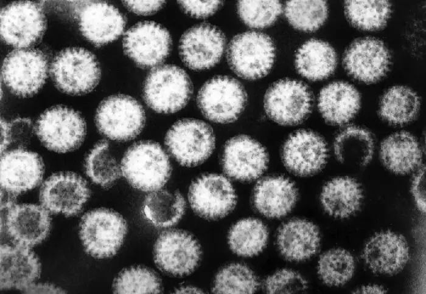
These viruses are widespread in children, especially in day-care centers. The CDC estimates that 95% of children in the United States have had at least one rotavirus infection by the time they reach age five.15 Due to the memory of the body’s immune system, adults who come into contact with rotavirus will not contract the infection or, if they do, are asymptomatic. The elderly, however, are vulnerable to rotavirus infection due to weakening of the immune system with age, so infections can spread through nursing homes and similar facilities. In these cases, the infection may be transmitted from a family member who may have subclinical or clinical disease. The virus can also be transmitted from contaminated surfaces, on which it can survive for some time.
Infected individuals exhibit fever, vomiting, and diarrhea. The virus can survive in the stomach following a meal, but is normally found in the small intestines, particularly the epithelial cells on the villi. Infection can cause food intolerance, especially with respect to lactose. The illness generally appears after an incubation period of about two days and lasts for approximately one week (three to eight days). Without supportive treatment, the illness can cause severe fluid loss, dehydration, and even death. Even with milder illness, repeated infections can potentially lead to malnutrition, especially in developing countries, where rotavirus infection is common due to poor sanitation and lack of access to clean drinking water. Patients (especially children) who are malnourished after an episode of diarrhea are more susceptible to future diarrheal illness, increasing their risk of death from rotavirus infection.
The most common clinical tool for diagnosis is enzyme immunoassay, which detects the virus from fecal samples. Latex agglutination assays are also used. Additionally, the virus can be detected using electron microscopy and RT-PCR.
Treatment is supportive with oral rehydration therapy. Preventive vaccination is also available. In the United States, rotavirus vaccines are part of the standard vaccine schedule and administration follows the guidelines of the World Health Organization (WHO). The WHO recommends that all infants worldwide receive the rotavirus vaccine, the first dose between six and 15 weeks of age and the second before 32 weeks.16
Gastroenteritis Caused by Noroviruses¶
Noroviruses, commonly identified as Norwalk viruses, are caliciviruses. Several strains can cause gastroenteritis. There are millions of cases a year, predominately in infants, young children, and the elderly. These viruses are easily transmitted and highly contagious. They are known for causing widespread infections in groups of people in confined spaces, such as on cruise ships. The viruses can be transmitted through direct contact, through touching contaminated surfaces, and through contaminated food. Because the virus is not killed by disinfectants used at standard concentrations for killing bacteria, the risk of transmission remains high, even after cleaning.
The signs and symptoms of norovirus infection are similar to those for rotavirus, with watery diarrhea, mild cramps, and fever. Additionally, these viruses sometimes cause projectile vomiting. The illness is usually relatively mild, develops 12 to 48 hours after exposure, and clears within a couple of days without treatment. However, dehydration may occur.
Norovirus can be detected using PCR or enzyme immunoassay (EIA) testing. RT-qPCR is the preferred approach as EIA is insufficiently sensitive. If EIA is used for rapid testing, diagnosis should be confirmed using PCR. No medications are available, but the illness is usually self-limiting. Rehydration therapy and electrolyte replacement may be used. Good hygiene, hand washing, and careful food preparation reduce the risk of infection.
Gastroenteritis Caused by Astroviruses¶
Astroviruses are single-stranded RNA viruses (family Astroviridae) that can cause severe gastroenteritis, especially in infants and children. Signs and symptoms include diarrhea, nausea, vomiting, fever, abdominal pain, headache, and malaise. The viruses are transmitted through the fecal-oral route (contaminated food or water). For diagnosis, stool samples are analyzed. Testing may involve enzyme immunoassays and immune electron microscopy. Treatment involves supportive rehydration and electrolyte replacement if needed.
Check Your Understanding
- Why are rotaviruses, noroviruses, and astroviruses more common in children?
Disease Profile: Viral Infections of the Gastrointestinal Tract
A number of viruses can cause gastroenteritis, characterized by inflammation of the GI tract and other signs and symptoms with a range of severities. As with bacterial GI infections, some cases can be relatively mild and self-limiting, while others can become serious and require intensive treatment. Antimicrobial drugs are generally not used to treat viral gastroenteritis; generally, these illnesses can be treated effectively with rehydration therapy to replace fluids lost in bouts of diarrhea and vomiting. Because most viral causes of gastroenteritis are quite contagious, the best preventive measures involve avoiding and/or isolating infected individuals and limiting transmission through good hygiene and sanitation.
![Table titled: Viral Causes of Gastroenteritis. Disease, Pathogen, Signs and Symptoms, Transmission, Diagnostic Tests, Vaccine. Astrovirus gastroenteritis Astroviruses; Fever, headache, abdominal pain, malaise, diarrhea, vomiting; Fecal-oral route, contaminated food or water Enzyme immunoassays, immune electron microscopy; None. Norovirus gastroenteritis; Noroviruses; Fever, diarrhea, projectile vomiting, dehydration; generally self-limiting within two days; Highly contagious via direct contact or contact with contaminated food or fomites Rapid enzyme immunoassay confirmed with RT-qPCR; None. Rotavirus gastroenteritis; Rotaviruses; Fever, diarrhea, vomiting, severe dehydration; recurring infections can lead to malnutrition and death Fecal-oral route; children and elderly most susceptible; Enzyme immunoassay of stool sample, latex agglutination assays, RT-PCR; Preventive vaccine recommended for infants.](img/osc-microbio-24-04-gastrotbl.webp)
Hepatitis¶
Hepatitis is a general term meaning inflammation of the liver, which can have a variety of causes. In some cases, the cause is viral infection. There are five main hepatitis viruses that are clinically significant: hepatitisviruses A (HAV), B (HBV), C (HCV), D, (HDV) and E (HEV) (Figure 24.26). Note that other viruses, such as Epstein-Barr virus (EBV), yellow fever, and cytomegalovirus (CMV) can also cause hepatitis and are discussed in Viral Infections of the Circulatory and Lymphatic Systems.
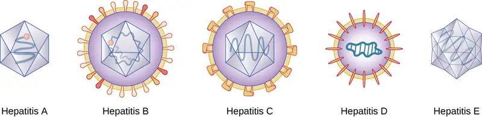
Although the five hepatitis viruses differ, they can cause some similar signs and symptoms because they all have an affinity for hepatocytes (liver cells). HAV and HEV can be contracted through ingestion while HBV, HCV, and HDV are transmitted by parenteral contact. It is possible for individuals to become long term or chronic carriers of hepatitis viruses.
The virus enters the blood (viremia), spreading to the spleen, the kidneys, and the liver. During viral replication, the virus infects hepatocytes. The inflammation is caused by the hepatocytes replicating and releasing more hepatitis virus. Signs and symptoms include malaise, anorexia, loss of appetite, dark urine, pain in the upper right quadrant of the abdomen, vomiting, nausea, diarrhea, joint pain, and gray stool. Additionally, when the liver is diseased or injured, it is unable to break down hemoglobin effectively, and bilirubin can build up in the body, giving the skin and mucous membranes a yellowish color, a condition called jaundice (Figure 24.27). In severe cases, death from liver necrosis may occur.
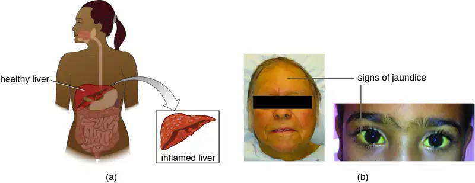
Despite having many similarities, each of the hepatitis viruses has its own unique characteristics. HAV is generally transmitted through the fecal-oral route, close personal contact, or exposure to contaminated water or food. Hepatitis A can develop after an incubation period of 15 to 50 days (the mean is 30). It is normally mild or even asymptomatic and is usually self-limiting within weeks to months. A more severe form, fulminant hepatitis, rarely occurs but has a high fatality rate of 70–80%. Vaccination is available and is recommended especially for children (between ages one and two), those traveling to countries with higher risk, those with liver disease and certain other conditions, and drug users.
Although HBV is associated with similar signs and symptoms, transmission and outcomes differ. This virus has a mean incubation period of 120 days and is generally associated with exposure to infectious blood or body fluids such as semen or saliva. Exposure can occur through skin puncture, across the placenta, or through mucosal contact, but it is not spread through casual contact such as hugging, hand holding, sneezing, or coughing, or even through breastfeeding or kissing. Risk of infection is greatest for those who use intravenous drugs or who have sexual contact with an infected individual. Health-care workers are also at risk from needle sticks and other injuries when treating infected patients. The infection can become chronic and may progress to cirrhosis or liver failure. It is also associated with liver cancer. Chronic infections are associated with the highest mortality rates and are more common in infants. Approximately 90% of infected infants become chronic carriers, compared with only 6–10% of infected adults.17 Vaccination is available and is recommended for children as part of the standard vaccination schedule (one dose at birth and the second by 18 months of age) and for adults at greater risk (e.g., those with certain diseases, intravenous drug users, and those who have sex with multiple partners). Health-care agencies are required to offer the HBV vaccine to all workers who have occupational exposure to blood and/or other infectious materials.
HCV is often undiagnosed and therefore may be more widespread than is documented. It has a mean incubation period of 45 days and is transmitted through contact with infected blood. Although some cases are asymptomatic and/or resolve spontaneously, 75%–85% of infected individuals become chronic carriers. Nearly all cases result from parenteral transmission often associated with IV drug use or transfusions. The risk is greatest for individuals with past or current history of intravenous drug use or who have had sexual contact with infected individuals. It has also been spread through contaminated blood products and can even be transmitted through contaminated personal products such as toothbrushes and razors. New medications have recently been developed that show great effectiveness in treating HCV and that are tailored to the specific genotype causing the infection.
HDV is uncommon in the United States and only occurs in individuals who are already infected with HBV, which it requires for replication. Therefore, vaccination against HBV is also protective against HDV infection. HDV is transmitted through contact with infected blood.
HEV infections are also rare in the United States but many individuals have a positive antibody titer for HEV. The virus is most commonly spread by the fecal-oral route through food and/or water contamination, or person-to-person contact, depending on the genotype of the virus, which varies by location. There are four genotypes that differ somewhat in their mode of transmission, distribution, and other factors (for example, two are zoonotic and two are not, and only one causes chronic infection). Genotypes three and four are only transmitted through food, while genotypes one and two are also transmitted through water and fecal-oral routes. Genotype one is the only type transmitted person-to-person and is the most common cause of HEV outbreaks. Consumption of undercooked meat, especially deer or pork, and shellfish can lead to infection. Genotypes three and four are zoonoses, so they can be transmitted from infected animals that are consumed. Pregnant people are at particular risk. This disease is usually self-limiting within two weeks and does not appear to cause chronic infection.
General laboratory testing for hepatitis begins with blood testing to examine liver function (Figure 24.28). When the liver is not functioning normally, the blood will contain elevated levels of alkaline phosphatase, alanine aminotransferase (ALT), aspartate aminotransferase (AST), direct bilirubin, total bilirubin, serum albumin, serum total protein, and calculated globulin, albumin/globulin (A/G) ratio. Some of these are included in a complete metabolic panel (CMP), which may first suggest a possible liver problem and indicate the need for more comprehensive testing. A hepatitis virus serological test panel can be used to detect antibodies for hepatitis viruses A, B, C, and sometimes D. Additionally, other immunological and genomic tests are available.
Specific treatments other than supportive therapy, rest, and fluids are often not available for hepatitis virus infection, except for HCV, which is often self-limited. Immunoglobulins can be used prophylactically following possible exposure. Medications are also used, including interferon alpha 2b and antivirals (e.g., lamivudine, entecavir, adefovir, and telbivudine) for chronic infections. Hepatitis C can be treated with interferon (as monotherapy or combined with other treatments), protease inhibitors, and other antivirals (e.g., the polymerase inhibitor sofosbuvir). Combination treatments are commonly used. Antiviral and immunosuppressive medications may be used for chronic cases of HEV. In severe cases, liver transplants may be necessary. Additionally, vaccines are available to prevent infection with HAV and HBV. The HAV vaccine is also protective against HEV. The HBV vaccine is also protective against HDV. There is no vaccine against HCV.
Link to Learning
Learn more information about hepatitis virus infections.
Check Your Understanding
- Why do the five different hepatitis viruses all cause similar signs and symptoms?
Micro Connections: Preventing HBV Transmission in Health-Care Settings
Hepatitis B was once a leading on-the-job hazard for health-care workers. Many health-care workers over the years have become infected, some developing cirrhosis and liver cancer. In 1982, the CDC recommended that health-care workers be vaccinated against HBV, and rates of infection have declined since then. Even though vaccination is now common, it is not always effective and not all individuals are vaccinated. Therefore, there is still a small risk for infection, especially for health-care workers working with individuals who have chronic infections, such as drug addicts, and for those with higher risk of needle sticks, such as phlebotomists. Dentists are also at risk.
Health-care workers need to take appropriate precautions to prevent infection by HBV and other illnesses. Blood is the greatest risk, but other body fluids can also transmit infection. Damaged skin, as occurs with eczema or psoriasis, can also allow transmission. Avoiding contact with body fluids, especially blood, by wearing gloves and face protection and using disposable syringes and needles reduce the risk of infection. Washing exposed skin with soap and water is recommended. Antiseptics may also be used, but may not help. Post-exposure treatment, including treatment with hepatitis B immunoglobulin (HBIG) and vaccination, may be used in the event of exposure to the virus from an infected patient. Detailed protocols are available for managing these situations. The virus can remain infective for up to seven days when on surfaces, even if no blood or other fluids are visible, so it is important to consider the best choices for disinfecting and sterilizing equipment that could potentially transmit the virus. The CDC recommends a solution of 10% bleach to disinfect surfaces.18 Finally, testing blood products is important to reduce the risk of transmission during transfusions and similar procedures.
Disease Profile: Viral Hepatitis
Hepatitis involves inflammation of the liver that typically manifests with signs and symptoms such as jaundice, nausea, vomiting, joint pain, gray stool, and loss of appetite. However, the severity and duration of the disease can vary greatly depending on the causative agent. Some infections may be completely asymptomatic, whereas others may be life threatening. The five different viruses capable of causing hepatitis are compared in Figure 24.28. For the sake of comparison, this table presents only the unique aspects of each form of viral hepatitis, not the commonalities.
![Table titled: Viral Forms of Hepatitis. Columns: Disease, Pathogen, Signs and Symptoms, Transmission; Antimicrobial Drugs; Vaccine. Hepatitis A; Hepatitisvirus A (HAV); Usually asymptomatic or mild and self-limiting within one to two weeks to a few months, sometimes longer but not, chronic; in rare cases leads to serious or fatal fulminant hepatitis; Contaminated food, water, objects, and person to person; None; Vaccine recommended for one year olds and high-risk adults. Hepatitis B Hepatitisvirus B (HBV); Similar to Hepatitis A, but may progress to cirrhosis and liver failure; associated with liver cancer; Contact with infected body fluids (blood, semen, saliva), e.g., via IV drug use, sexual transmission, health-care workers treating infected patients ; Interferon, entecavir, tenofovir, lamivudine, adefovir ; Vaccine recommended for infants and high-risk adults. Hepatitis C Hepatitisvirus C (HCV); Often asymptomatic, with 75%–85% chronic carriers; may progress to cirrhosis and liver failure; associated with liver cancer; Contact with infected body fluids, e.g., via IV drug use, transfusions, sexual transmission; Depends on genotype and on whether cirrhosis is present; interferons, new treatment such as simeprevir plus sofosbuvir, ombitasvir/paritaprevir/ritonavir and dasabuvir; None available. Hepatitis D; Hepatitisvirus D (HDV); Similar to hepatitis B; usually self-limiting within one to two weeks but can become chronic or fulminant in rare cases ; Contact with infected blood; infections can only occur in patients already infected with hepatitis B; None. Hepatitis B vaccine protects against HDV; Hepatitis E; Hepatitisvirus E (HEV); Generally asymptomatic or mild and self-limiting; typically does not cause chronic disease; Fecal-oral route, often in contaminated water or undercooked meat; most common in developing countries; Supportive treatment; usually self-limiting, but some strains can become chronic; antiviral and immunosuppressive possible for chronic cases; Vaccine available in China only.](img/osc-microbio-24-04-heptbl.webp)
24.5 Protozoan Infections of the Gastrointestinal Tract¶
Learning Objectives
By the end of this section, you will be able to:
- Identify the most common protozoans that can cause infections of the GI tract
- Compare the major characteristics of specific protozoan diseases affecting the GI tract
Like other microbes, protozoa are abundant in natural microbiota but can also be associated with significant illness. Gastrointestinal diseases caused by protozoa are generally associated with exposure to contaminated food and water, meaning that those without access to good sanitation are at greatest risk. Even in developed countries, infections can occur and these microbes have sometimes caused significant outbreaks from contamination of public water supplies.
Giardiasis¶
Also called backpacker’s diarrhea or beaver fever, giardiasis is a common disease in the United States caused by the flagellated protist Giardia lamblia, also known as Giardia intestinalis or Giardia duodenalis (Figure 1.16). To establish infection, G. lamblia uses a large adhesive disk to attach to the intestinal mucosa. The disk is comprised of microtubules. During adhesion, the flagella of G. lamblia move in a manner that draws fluid out from under the disk, resulting in an area of lower pressure that promotes its adhesion to the intestinal epithelial cells. Due to its attachment, Giardia also blocks absorption of nutrients, including fats.
Transmission occurs through contaminated food or water or directly from person to person. Children in day-care centers are at risk due to their tendency to put items into their mouths that may be contaminated. Large outbreaks may occur if a public water supply becomes contaminated. Giardia have a resistant cyst stage in their life cycle that is able to survive cold temperatures and the chlorination treatment typically used for drinking water in municipal reservoirs. As a result, municipal water must be filtered to trap and remove these cysts. Once consumed by the host, Giardia develops into the active tropozoite.
Infected individuals may be asymptomatic or have gastrointestinal signs and symptoms, sometimes accompanied by weight loss. Common symptoms, which appear one to three weeks after exposure, include diarrhea, nausea, stomach cramps, gas, greasy stool (because fat absorption is being blocked), and possible dehydration. The parasite remains in the colon and does not cause systemic infection. Signs and symptoms generally clear within two to six weeks. Chronic infections may develop and are often resistant to treatment. These are associated with weight loss, episodic diarrhea, and malabsorption syndrome due to the blocked nutrient absorption.
Diagnosis may be made using observation under the microscope. A stool ova and parasite (O&P) exam involves direct examination of a stool sample for the presence of cysts and trophozoites; it can be used to distinguish common parasitic intestinal infections. ELISA and other immunoassay tests, including commercial direct fluorescence antibody kits, are also used. The most common treatments use metronidazole as the first-line choice, followed by tinidazole. If the infection becomes chronic, the parasites may become resistant to medications.
Cryptosporidiosis¶
Another protozoan intestinal illness is cryptosporidiosis, which is usually caused by Cryptosporidium parvum or C. hominis. (Figure 24.29) These pathogens are commonly found in animals and can be spread in feces from mice, birds, and farm animals. Contaminated water and food are most commonly responsible for transmission. The protozoan can also be transmitted through human contact with infected animals or their feces.
In the United States, outbreaks of cryptosporidiosis generally occur through contamination of the public water supply or contaminated water at water parks, swimming pools, and day-care centers. The risk is greatest in areas with poor sanitation, making the disease more common in developing countries.
Signs and symptoms include watery diarrhea, nausea, vomiting, cramps, fever, dehydration, and weight loss. The illness is generally self-limiting within a month. However, immunocompromised patients, such as those with HIV/AIDS, are at particular risk of severe illness or death.
Diagnosis involves direct examination of stool samples, often over multiple days. As with giardiasis, a stool O&P exam may be helpful. Acid fast staining is often used. Enzyme immunoassays and molecular analysis (PCR) are available.
The first line of treatment is typically oral rehydration therapy. Medications are sometimes used to treat the diarrhea. The broad-range anti-parasitic drug nitazoxanide can be used to treat cryptosporidiosis. Other anti-parasitic drugs that can be used include azithromycin and paromomycin.
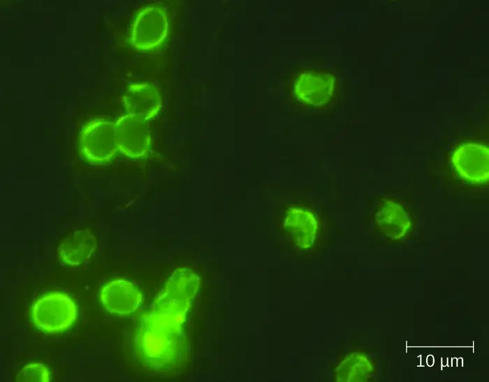
Amoebiasis (Amebiasis)¶
The protozoan parasite Entamoeba histolytica causes amoebiasis, which is known as amoebic dysentery in severe cases. E. histolytica is generally transmitted through water or food that has fecal contamination. The disease is most widespread in the developing world and is one of the leading causes of mortality from parasitic disease worldwide. Disease can be caused by as few as 10 cysts being transmitted.
Signs and symptoms range from nonexistent to mild diarrhea to severe amoebic dysentery. Severe infection causes the abdomen to become distended and may be associated with fever. The parasite may live in the colon without causing signs or symptoms or may invade the mucosa to cause colitis. In some cases, the disease spreads to the spleen, brain, genitourinary tract, or lungs. In particular, it may spread to the liver and cause an abscess. When a liver abscess develops, fever, nausea, liver tenderness, weight loss, and pain in the right abdominal quadrant may occur. Chronic infection may occur and is associated with intermittent diarrhea, mucus, pain, flatulence, and weight loss.
Direct examination of fecal specimens may be used for diagnosis. As with cryptosporidiosis, samples are often examined on multiple days. A stool O&P exam of fecal or biopsy specimens may be helpful. Immunoassay, serology, biopsy, molecular, and antibody detection tests are available. Enzyme immunoassay may not distinguish current from past illness. Magnetic resonance imaging (MRI) can be used to detect any liver abscesses. The first line of treatment is metronidazole or tinidazole, followed by diloxanide furoate, iodoquinol, or paromomycin to eliminate the cysts that remain.
Cyclosporiasis¶
The intestinal disease cyclosporiasis is caused by the protozoan Cyclospora cayetanensis. It is endemic to tropical and subtropical regions and therefore uncommon in the United States, although there have been outbreaks associated with contaminated produce imported from regions where the protozoan is more common.
This protist is transmitted through contaminated food and water and reaches the lining of the small intestine, where it causes infection. Signs and symptoms begin within seven to ten days after ingestion. Based on limited data, it appears to be seasonal in ways that differ regionally and that are poorly understood.19
Some individuals do not develop signs or symptoms. Those who do may exhibit explosive and watery diarrhea, fever, nausea, vomiting, cramps, loss of appetite, fatigue, and bloating. These symptoms may last for months without treatment. Trimethoprim-sulfamethoxazole is the recommended treatment.
Microscopic examination is used for diagnosis. A stool O&P examination may be helpful. The oocysts have a distinctive blue halo when viewed using ultraviolet fluorescence microscopy (Figure 24.30).
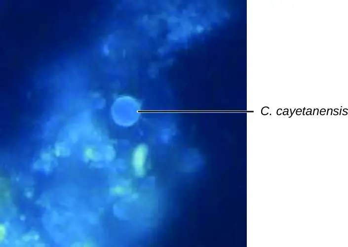
Check Your Understanding
- Which protozoan GI infections are common in the United States?
Disease Profile: Protozoan Gastrointestinal Infections
Protozoan GI infections are generally transmitted through contaminated food or water, triggering diarrhea and vomiting that can lead to dehydration. Rehydration therapy is an important aspect of treatment, but most protozoan GI infections can also be treated with drugs that target protozoans.
![Table titled: Protozoan Infections of the GI Tract. Columns: Disease, Pathogen, Signs and Symptoms, Transmission, Diagnostic Tests, Antimicrobial Drugs. Amoebiasis (amoebic dysentery); Entamoeba histolytica; From mild diarrhea to severe dysentery and colitis; may cause abscess on the liver; Fecal-oral route; ingestion of cysts from fecally contaminated water, food, or hands Stool O&P exam, enzyme immunoassay; Metronidazole, tinidazole, diloxanide furoate, iodoquinol, paromomycin. Cryptosporidiosis; Cryptosporidium parvum, Cryptosporidium hominis; Watery diarrhea, nausea, vomiting, cramps, fever, dehydration, and weight loss; Contact with feces of infected mice, birds, farm animals; ingestion of contaminated food or water; exposure to contaminated water while swimming or bathing ; Stool O&P exam, enzyme immunoassay, PCR; Nitazoxanide, azithromycin, and paromomycin. Cyclosporiasis; Cyclospora cayetanensis; Explosive diarrhea, fever, nausea, vomiting, cramps, loss of appetite, fatigue, bloating; Ingestion of contaminated food or water; Stool O&P exam using ultraviolet fluorescence microscopy; Trimethoprim-sulfmethoxazole. Giardiasis; Giardia lamblia; Diarrhea, nausea, stomach cramps, gas, greasy stool, dehydration if severe; sometimes malabsorption syndrome; Contact with infected individual or contaminated fomites; ingestion of contaminated food or water; Stool O&P exam; ELISA, direct fluorescence antibody assays; Metronidazole, tinidazole.](img/osc-microbio-24-05-giprototbl.webp)
24.6 Helminthic Infections of the Gastrointestinal Tract¶
Learning Objectives
By the end of this section, you will be able to:
- Identify the most common helminths that cause infections of the GI tract
- Compare the major characteristics of specific helminthic diseases affecting GI tract
Helminths are widespread intestinal parasites. These parasites can be divided into three common groups: round-bodied worms also described as nematodes, flat-bodied worms that are segmented (also described as cestodes), and flat-bodied worms that are non-segmented (also described as trematodes). The nematodes include roundworms, pinworms, hookworms, and whipworms. Cestodes include beef, pork, and fish tapeworms. Trematodes are collectively called flukes and more uniquely identified with the body site where the adult flukes are located. Although infection can have serious consequences, many of these parasites are so well adapted to the human host that there is little obvious disease.
Ascariasis¶
Infections caused by the large nematode roundworm Ascaris lumbricoides, a soil-transmitted helminth, are called ascariasis. Over 800 million to 1 billion people are estimated to be infected worldwide.20 Infections are most common in warmer climates and at warmer times of year. At present, infections are uncommon in the United States. The eggs of the worms are transmitted through contaminated food and water. This may happen if food is grown in contaminated soil, including when manure is used as fertilizer.
When an individual consumes embryonated eggs (those with a developing embryo), the eggs travel to the intestine and the larvae are able to hatch. Ascaris is able to produce proteases that allow for penetration and degradation of host tissue. The juvenile worms can then enter the circulatory system and migrate to the lungs where they enter the alveoli (air sacs). From here they crawl to the pharynx and then follow the gut lumen to return to the small intestine, where they mature into adult roundworms. Females in the host will produce and release eggs that leave the host via feces. In some cases, the worms can block ducts such as those of the pancreas or gallbladder.
The infection is commonly asymptomatic. When signs and symptoms are present, they include shortness of breath, cough, nausea, diarrhea, blood in the stool, abdominal pain, weight loss, and fatigue. The roundworms may be visible in the stool. In severe cases, children with substantial infections may experience intestinal blockage.
The eggs can be identified by microscopic examination of the stool (Figure 24.32). In some cases, the worms themselves may be identified if coughed up or excreted in stool. They can also sometimes be identified by X-rays, ultrasounds, or MRIs.
Ascariasis is self-limiting, but can last one to two years because the worms can inhibit the body’s inflammatory response through glycan gimmickry (see Virulence Factors of Eukaryotic Pathogens). The first line of treatment is mebendazole or albendazole. In some severe cases, surgery may be required.
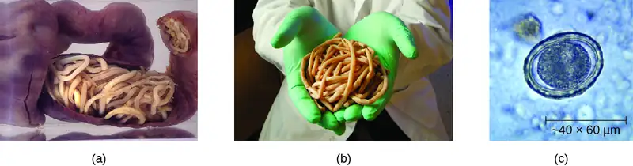
Check Your Understanding
- Describe the route by which A. lumbricoides reaches the host’s intestines as an adult worm.
Hookworm¶
Two species of nematode worms are associated with hookworm infection. Both species are found in the Americas, Africa, and Asia. Necator americanus is found predominantly in the United States and Australia. Another species, Ancylostoma doudenale, is found in southern Europe, North Africa, the Middle East, and Asia.
The eggs of these species develop into larvae in soil contaminated by dog or cat feces. These larvae can penetrate the skin. After traveling through the venous circulation, they reach the lungs. When they are coughed up, they are then swallowed and can enter the intestine and develop into mature adults. At this stage, they attach to the wall of the intestine, where they feed on blood and can potentially cause anemia. Signs and symptoms include cough, an itchy rash, loss of appetite, abdominal pain, and diarrhea. In children, hookworms can affect physical and cognitive growth.
Some hookworm species, such as Ancylostoma braziliense that is commonly found in animals such as cats and dogs, can penetrate human skin and migrate, causing cutaneous larva migrans, a skin disease caused by the larvae of hookworms. As they move across the skin, in the subcutaneous tissue, pruritic tracks appear (Figure 24.33).
The infection is diagnosed using microscopic examination of the stool, allowing for observation of eggs in the feces. Medications such as albendazole, mebendazole, and pyrantel pamoate are used as needed to treat systemic infection. In addition to systemic medication for symptoms associated with cutaneous larva migrans, topical thiabendazole is applied to the affected areas.
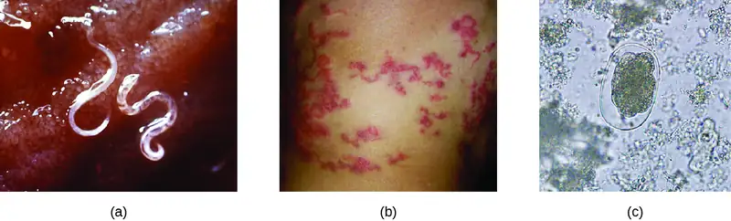
Strongyloidiasis¶
Strongyloidiasis is generally caused by Strongyloides stercoralis, a soil-transmitted helminth with both free-living and parasitic forms. In the parasitic form, the larvae of these nematodes generally penetrate the body through the skin, especially through bare feet, although transmission through organ transplantation or at facilities like day-care centers can also occur. When excreted in the stool, larvae can become free-living adults rather than developing into the parasitic form. These free-living worms reproduce, laying eggs that hatch into larvae that can develop into the parasitic form. In the parasitic life cycle, infective larvae enter the skin, generally through the feet. The larvae reach the circulatory system, which allows them to travel to the alveolar spaces of the lungs. They are transported to the pharynx where, like many other helminths, the infected patient coughs them up and swallows them again so that they return to the intestine. Once they reach the intestine, females live in the epithelium and produce eggs that develop asexually, unlike the free-living forms, which use sexual reproduction. The larvae may be excreted in the stool or can reinfect the host by entering the tissue of the intestines and skin around the anus, which can lead to chronic infections.
The condition is generally asymptomatic, although severe symptoms can develop after treatment with corticosteroids for asthma or chronic obstructive pulmonary disease, or following other forms of immunosuppression. When the immune system is suppressed, the rate of autoinfection increases, and huge amounts of larvae migrate to organs throughout the body.
Signs and symptoms are generally nonspecific. The condition can cause a rash at the site of skin entry, cough (dry or with blood), fever, nausea, difficulty breathing, bloating, pain, heartburn, and, rarely, arthritis, or cardiac or kidney complications. Disseminated strongyloidiasis or hyperinfection is a life-threatening form of the disease that can occur, usually following immunosuppression such as that caused by glucocorticoid treatment (most commonly), with other immunosuppressive medications, with HIV infection, or with malnutrition.
As with other helminths, direct examination of the stool is important in diagnosis. Ideally, this should be continued over seven days. Serological testing, including antigen testing, is also available. These can be limited by cross-reactions with other similar parasites and by the inability to distinguish current from resolved infection. Ivermectin is the preferred treatment, with albendazole as a secondary option.
Check Your Understanding
- How does an acute infection of S. stercoralis become chronic?
Pinworms (Enterobiasis)¶
Enterobius vermicularis, commonly called pinworms, are tiny (2–13 mm) nematodes that cause enterobiasis. Of all helminthic infections, enterobiasis is the most common in the United States, affecting as many as one-third of American children.21 Although the signs and symptoms are generally mild, patients may experience abdominal pain and insomnia from itching of the perianal region, which frequently occurs at night when worms leave the anus to lay eggs. The itching contributes to transmission, as the disease is transmitted through the fecal-oral route. When an infected individual scratches the anal area, eggs may get under the fingernails and later be deposited near the individual’s mouth, causing reinfection, or on fomites, where they can be transferred to new hosts. After being ingested, the larvae hatch within the small intestine and then take up residence in the colon and develop into adults. From the colon, the female adult exits the body at night to lay eggs (Figure 24.34).
Infection is diagnosed in any of three ways. First, because the worms emerge at night to lay eggs, it is possible to inspect the perianal region for worms while an individual is asleep. An alternative is to use transparent tape to remove eggs from the area around the anus first thing in the morning for three days to yield eggs for microscopic examination. Finally, it may be possible to detect eggs through examination of samples from under the fingernails, where eggs may lodge due to scratching. Once diagnosis has been made, mebendazole, albendazole, and pyrantel pamoate are effective for treatment.
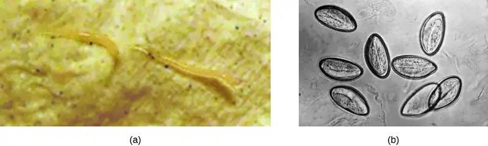
Trichuriasis¶
The nematode whipworm Trichuris trichiura is a parasite that is transmitted by ingestion from soil-contaminated hands or food and causes trichuriasis. Infection is most common in warm environments, especially when there is poor sanitation and greater risk of fecal contamination of soil, or when food is grown in soil using manure as a fertilizer. The signs and symptoms may be minimal or nonexistent. When a substantial infection develops, signs and symptoms include painful, frequent diarrhea that may contain mucus and blood. It is possible for the infection to cause rectal prolapse, a condition in which a portion of the rectum becomes detached from the inside of the body and protrudes from the anus (Figure 24.35). Severely infected children may experience reduced growth and their cognitive development may be affected.
When fertilized eggs are ingested, they travel to the intestine and the larvae emerge, taking up residence in the walls of the colon and cecum. They attach themselves with part of their bodies embedded in the mucosa. The larvae mature and live in the cecum and ascending colon. After 60 to 70 days, females begin to lay 3000 to 20,000 eggs per day.
Diagnosis involves examination of the feces for the presence of eggs. It may be necessary to use concentration techniques and to collect specimens on multiple days. Following diagnosis, the infection may be treated with mebendazole, albendazole, or ivermectin.
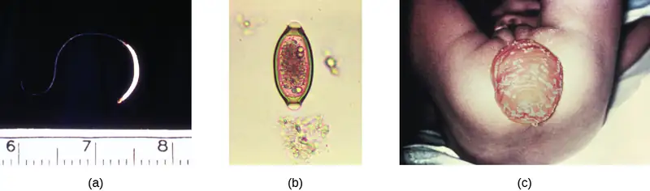
Trichinosis¶
Trichinosis (trichenellosis) develops following consumption of food that contains Trichinella spiralis (most commonly) or other Trichinella species. These microscopic nematode worms are most commonly transmitted in meat, especially pork, that has not been cooked thoroughly. T. spiralis larvae in meat emerge from cysts when exposed to acid and pepsin in the stomach. They develop into mature adults within the large intestine. The larvae produced in the large intestine are able to migrate into the muscles mechanically via the stylet of the parasite, forming cysts. Muscle proteins are reduced in abundance or undetectable in cells that contain Trichinella (nurse cells). Animals that ingest the cysts from other animals can later develop infection (Figure 24.36).
Although infection may be asymptomatic, symptomatic infections begin within a day or two of consuming the nematodes. Abdominal symptoms arise first and can include diarrhea, constipation, and abdominal pain. Other possible symptoms include headache, light sensitivity, muscle pain, fever, cough, chills, and conjunctivitis. More severe symptoms affecting motor coordination, breathing, and the heart sometimes occur. It may take months for the symptoms to resolve, and the condition is occasionally fatal. Mild cases may be mistaken for influenza or similar conditions.
Infection is diagnosed using clinical history, muscle biopsy to look for larvae, and serological testing, including immunoassays. Enzyme immunoassay is the most common test. It is difficult to effectively treat larvae that have formed cysts in the muscle, although medications may help. It is best to begin treatment as soon as possible because medications such as mebendazole and albendazole are effective in killing only the adult worms in the intestine. Steroids may be used to reduce inflammation if larvae are in the muscles.
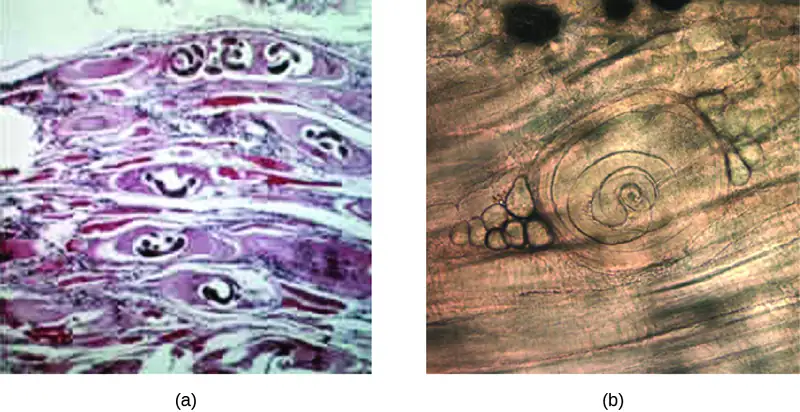
Check Your Understanding
- Compare and contrast the transmissions of pinworms and whipworms.
Tapeworms (Taeniasis)¶
Taeniasis is a tapeworm infection, generally caused by pork (Taenia solium), beef (Taenia saginata), and Asian (Taenia asiatica) tapeworms found in undercooked meat. Consumption of raw or undercooked fish, including contaminated sushi, can also result in infection from the fish tapeworm (Diphyllobothrium latum). Tapeworms are flatworms (cestodes) with multiple body segments and a head called a scolex that attaches to the intestinal wall. Tapeworms can become quite large, reaching 4 to 8 meters long (Figure 24.37). Figure 5.23 illustrates the life cycle of a tapeworm.
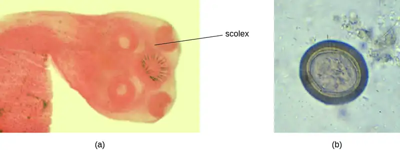
Tapeworms attached to the intestinal wall produce eggs that are excreted in feces. After ingestion by animals, the eggs hatch and the larvae emerge. They may take up residence in the intestine, but can sometimes move to other tissues, especially muscle or brain tissue. When T. solium larvae form cysts in tissue, the condition is called cysticercosis. This occurs through ingestion of eggs via the fecal-oral route, not through consumption of undercooked meat. It can develop in the muscles, eye (ophthalmic cysticercosis), or brain (neurocysticercosis).
Infections may be asymptomatic or they may cause mild gastrointestinal symptoms such as epigastric discomfort, nausea, diarrhea, flatulence, or hunger pains. It is also common to find visible tapeworm segments passed in the stool. In cases of cysticercosis, symptoms differ depending upon where the cysts become established. Neurocysticercosis can have severe, life-threatening consequences and is associated with headaches and seizures because of the presence of the tapeworm larvae encysted in the brain. Cysts in muscles may be asymptomatic, or they may be painful.
To diagnose these conditions, microscopic analysis of stool samples from three separate days is generally recommended. Eggs or body segments, called proglottids, may be visible in these samples. Molecular methods have been developed but are not yet widely available. Imaging, such as CT and MRI, may be used to detect cysts. Praziquantel or niclosamide are used for treatment.
Micro Connections: What’s in Your Sushi Roll?
As foods that contain raw fish, such as sushi and sashimi, continue to increase in popularity throughout the world, so does the risk of parasitic infections carried by raw or undercooked fish. Diphyllobothrium species, known as fish tapeworms, is one of the main culprits. Evidence suggests that undercooked salmon caused an increase in Diphyllobothrium infections in British Columbia in the 1970s and early 1980s. In the years since, the number of reported cases in the United States and Canada has been low, but it is likely that cases are underreported because the causative agent is not easily recognized.22
Another illness transmitted in undercooked fish is herring worm disease, or anisakiasis, in which nematodes attach to the epithelium of the esophagus, stomach, or small intestine. Cases have increased around the world as raw fish consumption has increased.23
Although the message may be unpopular with sushi lovers, fish should be frozen or cooked before eating. The extremely low and high temperatures associated with freezing and cooking kill worms and larvae contained in the meat, thereby preventing infection. Ingesting fresh, raw sushi may make for a delightful meal, but it also entails some risk.
Hydatid Disease¶
Another cestode, Echinococcus granulosus, causes a serious infection known as hydatid disease (cystic echinococcosis). E. granulosus is found in dogs (the definitive host), as well as several intermediate hosts (sheep, pigs, goats, cattle). The cestodes are transmitted through eggs in the feces from infected animals, which can be an occupational hazard for individuals who work in agriculture.
Once ingested, E. granulosus eggs hatch in the small intestine and release the larvae. The larvae invade the intestinal wall to gain access to the circulatory system. They form hydatid cysts in internal organs, especially in the lungs and liver, that grow slowly and are often undetected until they become large. If the cysts burst, a severe allergic reaction (anaphylaxis) may occur.
Cysts present in the liver can cause enlargement of the liver, nausea, vomiting, right epigastric pain, pain in the right upper quadrant, and possible allergic signs and symptoms. Cysts in the lungs can lead to alveolar disease. Abdominal pain, weight loss, pain, and malaise may occur, and inflammatory processes develop.
E. granulosus can be detected through imaging (ultrasonography, CT, MRI) that shows the cysts. Serologic tests, including ELISA and indirect hemagglutinin tests, are used. Cystic disease is most effectively treated with surgery to remove cysts, but other treatments are also available, including chemotherapy with anti-helminthic drugs (albendazole or mebendazole).
Check Your Understanding
- Describe the risks of the cysts associated with taeniasis and hydatid disease.
Flukes¶
Flukes are flatworms that have a leaflike appearance. They are a type of trematode worm, and multiple species are associated with disease in humans. The most common are liver flukes and intestinal flukes (Figure 24.38).
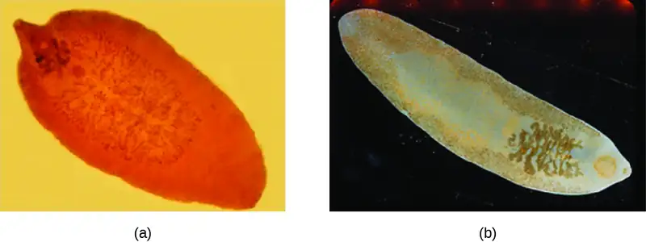
Liver Flukes¶
The liver flukes are several species of trematodes that cause disease by interfering with the bile duct. Fascioliasis is caused by Fasciola hepatica and Fasciola gigantica in contaminated raw or undercooked aquatic plants (e.g., watercress). In Fasciola infection, adult flukes develop in the bile duct and release eggs into the feces. Clonochiasis is caused by Clonorchis sinensis in contaminated freshwater fish. Other flukes, such as Opisthorchis viverrini (found in fish) and Opisthorchis felineus (found in freshwater snails), also cause infections. Liver flukes spend part of their life cycle in freshwater snails, which serve as an intermediate host. Humans are typically infected after eating aquatic plants contaminated by the infective larvae after they have left the snail. Once they reach the human intestine, they migrate back to the bile duct, where they mature. The life cycle is similar for the other infectious liver flukes, (see Figure 5.22).
When Fasciola flukes cause acute infection, signs and symptoms include nausea, vomiting, abdominal pain, rash, fever, malaise, and breathing difficulties. If the infection becomes chronic, with adult flukes living in the bile duct, then cholangitis, cirrhosis, pancreatitis, cholecystitis, and gallstones may develop. Symptoms are similar for infections by other liver flukes. Cholangiocarcinoma can occur from C. sinensis infection. The Opisthorchis species can also be associated with cancer development.
Diagnosis is accomplished using patient history and examination of samples from feces or other samples (such as vomitus). Because the eggs may appear similar, immunoassay techniques are available that can help distinguish species. The preferred treatment for fascioliasis is triclabendazole. C. sinensis and Opisthorchis spp. infections are treated with praziquantel or albendazole.
Intestinal Flukes¶
The intestinal flukes are trematodes that develop in the intestines. Many, such as Fasciolopsis buski, which causes fasciolopsiasis, are closely related to liver flukes. Intestinal flukes are ingested from contaminated aquatic plants that have not been properly cooked. When the cysts are consumed, the larvae emerge in the duodenum and develop into adults while attached to the intestinal epithelium. The eggs are released in stool.
Intestinal fluke infection is often asymptomatic, but some cases may involve mild diarrhea and abdominal pain. More severe symptoms such as vomiting, nausea, allergic reactions, and anemia can sometimes occur, and high parasite loads may sometimes lead to intestinal obstructions.
Diagnosis is the same as with liver flukes: examination of feces or other samples and immunoassay. Praziquantel is used to treat infections caused by intestinal flukes.
Check Your Understanding
- How are flukes transmitted?
Disease Profile: Helminthic Gastrointestinal Infections
Numerous helminths are capable of colonizing the GI tract. Many such infections are asymptomatic, but others may cause signs and symptoms ranging from mild GI stress to severe systemic infection. Helminths have complex and unique life cycles that dictate their specific modes of transmission. Most helminthic infections can be treated with medications.
![Table titled: Helminthic Infections of the GI Tract. Columns: Disease, Pathogen, Signs and Symptoms, Transmission, Diagnostic Tests, Antimicrobial Drugs. Ascariasis; Ascaris lumbricoides; Shortness of breath, cough, nausea, diarrhea, bloody stool, abdominal pain, weight loss, fatigue, worms in stool or sputum; Ingestion of eggs in fecally contaminated food and water; Microscopic observation of eggs in stool sample, X-rays, ultrasounds or MRIs; Albendazole, mebendazole. Hookworm; Necator americanus, Ancyclostoma doudenale; Cough, itchy rash, wheezing, loss of appetite, abdominal pain, diarrhea, cutaneous larva migrans; Larvae in soil contaminated by dog or cat feces penetrate the skin; Microscopic observation of eggs in stool sample; Albendazole, mebendazole, pyrantel pamoate, thiabendazole. Hydatid disease (cystic echinococcosis); Echinococcus granulosus ; Cysts in lungs, liver, and other organs causing nausea, GI distress, and weight loss; severe anaphylaxis or death if cysts burst; Exposure to eggs in feces of infected dogs or livestock; CT, MRI, or ultrasonography to detect cysts; ELISA, indirect hemagglutinin test; Albendazole or mebenazole. Intestinal flukes (fasciolopsiasis); Fasciolopsis buski; Diarrhea, abdominal pain; in severe cases, vomiting, nausea, intestinal obstruction, anemia, allergic reactions; Ingestion of raw or undercooked aquatic plants containing cysts; Microscopic examination of eggs in stool or other samples; immunoassays; Praziquantel. Liver flukes; Fasciola hepatica, F. gigantica, Clonorchis sinensis, Opisthorchis viverrini, O. felineus; Fever, malaise, anemia, abdominal signs and symptoms, transaminitis; cholangitis, cirrhosis, pancreatitis, cholecystitis, gall stones in chronic phase; Ingestion of raw or undercooked aquatic plants (Fasciola spp.) or freshwater fish (Clonorchis spp.) contaminated with eggs or cysts; Microscopic observation of eggs in stool or other samples; immunoassays; Triclabendazole for Fasciola; praziquantel, albendazole for Clonorchis and Opisthorchis. Pinworms (Enterobiasis); Enterobius vermicularis; Itching around the anus, abdominal pain, insomnia, irritation of female genital tract Fecal-oral route; Visual observation of worms in anal region; microscopic observation of eggs from anal area or under fingernails; Mebendazole, albendazole, pyrantel pamoate. Strongyloidiasis; Strongyloides stercoralis; Often asymptomatic; cough (sometimes bloody), skin rash, abdominal pain, diarrhea; in immunosuppressed patients, may become disseminated, causing serious and potentially fatal complications Soil-dwelling larvae penetrate the skin, usually bare feet; Microscopic observation of larvae in stool; serological testing for antigens; Ivermectin, albendazole. Tapeworms (taeniasis) ; Taenia solium, T. saginata, T. asiatica, Diphyllobothrium latum; Asymptomatic or mild GI distress; cysts in muscle, eye, or brain (cysticercosis); brain cysts can cause headaches, seizures, or death; Ingestion of raw or undercooked pork or beef from infected animal; Observation of worm segments or microscopic eggs in stool; CT or MRI to detect cysts; Praziquantel, niclosamide. Trichinosis; Trichinella spiralis, other Trichinella spp. Diarrhea, constipation, abdominal pain, headache, cough, chills, light sensitivity, muscle pain, fever, conjunctivitis; in severe cases may affect motor coordination, breathing, heart function; Ingestion of raw or undercooked pork or other meat of infected animal; Observation of cysts in muscle biopsy, enzyme immunoassay; Albendazole, mebendazole. Whipworm (trichuriasis); Trichuris trichiura; Abdominal pain, anemia, diarrhea (possibly bloody), rectal prolapse; Ingestion of eggs in fecally contaminated food Microscopic observation of eggs in stool; Albendazole, mebendazole, ivermectin.](img/osc-microbio-24-06-helminthtbl.webp)
![Continuation of table titled: Helminthic Infections of the GI Tract. Columns: Disease, Pathogen, Signs and Symptoms, Transmission, Diagnostic Tests, Antimicrobial Drugs. Strongyloidiasis; Strongyloides stercoralis; Often asymptomatic; cough (sometimes bloody), skin rash, abdominal pain, diarrhea; in immunosuppressed patients, may become disseminated, causing serious and potentially fatal complications Soil-dwelling larvae penetrate the skin, usually bare feet; Microscopic observation of larvae in stool; serological testing for antigens; Ivermectin, albendazole. Tapeworms (taeniasis) ; Taenia solium, T. saginata, T. asiatica, Diphyllobothrium latum; Asymptomatic or mild GI distress; cysts in muscle, eye, or brain (cysticercosis); brain cysts can cause headaches, seizures, or death; Ingestion of raw or undercooked pork or beef from infected animal; Observation of worm segments or microscopic eggs in stool; CT or MRI to detect cysts; Praziquantel, niclosamide. Trichinosis; Trichinella spiralis, other Trichinella spp. Diarrhea, constipation, abdominal pain, headache, cough, chills, light sensitivity, muscle pain, fever, conjunctivitis; in severe cases may affect motor coordination, breathing, heart function; Ingestion of raw or undercooked pork or other meat of infected animal; Observation of cysts in muscle biopsy, enzyme immunoassay; Albendazole, mebendazole. Whipworm (trichuriasis); Trichuris trichiura; Abdominal pain, anemia, diarrhea (possibly bloody), rectal prolapse; Ingestion of eggs in fecally contaminated food Microscopic observation of eggs in stool; Albendazole, mebendazole, ivermectin.](img/osc-microbio-24-06-helminthtbl2.webp)
Clinical Focus: Resolution
Carli’s doctor explained that she had bacterial gastroenteritis caused by Salmonella bacteria. The source of these bacteria was likely the undercooked egg. Had the egg been fully cooked, the high temperature would have been sufficient to kill any Salmonella in or on the egg. In this case, enough bacteria survived to cause an infection once the egg was eaten.
Carli’s signs and symptoms continued to worsen. Her fever became higher, her vomiting and diarrhea continued, and she began to become dehydrated. She felt thirsty all the time and had continual abdominal cramps. Carli’s doctor treated her with intravenous fluids to help with her dehydration, but did not prescribe antibiotics. Carli’s parents were confused because they thought a bacterial infection should always be treated with antibiotics.
The doctor explained that the worst medical problem for Carli was dehydration. Except in the most vulnerable and sick patients, such as those with HIV/AIDS, antibiotics do not reduce recovery time or improve outcomes in Salmonella infections. In fact, antibiotics can actually delay the natural excretion of bacteria from the body. Rehydration therapy replenishes lost fluids, diminishing the effects of dehydration and improving the patient’s condition while the infection resolves.
After two days of rehydration therapy, Carli’s signs and symptoms began to fade. She was still somewhat thirsty, but the amount of urine she passed became larger and the color lighter. She stopped vomiting. Her fever was gone, and so was the diarrhea. At that point, stool analysis found very few Salmonella bacteria. In one week, Carli was discharged as fully recovered.
Go back to the previous Clinical Focus box.
Chapter Review¶
Key Concepts and Summary¶
24.1 Anatomy and Normal Microbiota of the Digestive System¶
- The digestive tract, consisting of the oral cavity, pharynx, esophagus, stomach, small intestine, and large intestine, has a normal microbiota that is important for health.
- The constant movement of materials through the gastrointestinal canal, the protective layer of mucus, the normal microbiota, and the harsh chemical environment in the stomach and small intestine help to prevent colonization by pathogens.
- Infections or microbial toxins in the oral cavity can cause tooth decay, periodontal disease, and various types of ulcers.
- Infections and intoxications of the gastrointestinal tract can cause general symptoms such as nausea, vomiting, diarrhea, and fever. Localized inflammation of the GI tract can result in gastritis, enteritis, gastroenteritis, hepatitis, or colitis, and damage to epithelial cells of the colon can lead to dysentery.
- Foodborne illness refers to infections or intoxications that originate with pathogens or toxins ingested in contaminated food or water.
24.2 Microbial Diseases of the Mouth and Oral Cavity¶
- Dental caries, tartar, and gingivitis are caused by overgrowth of oral bacteria, usually Streptococcus and Actinomyces species, as a result of insufficient dental hygiene.
- Gingivitis can worsen, allowing Porphyromonas, Streptococcus, and Actinomyces species to spread and cause periodontitis. When Prevotella intermedia, Fusobacterium species, and Treponema vicentii are involved, it can lead to acute necrotizing ulcerative gingivitis.
- The herpes simplex virus type 1 can cause lesions of the mouth and throat called herpetic gingivostomatitis.
- Other infections of the mouth include oral thrush, a fungal infection caused by overgrowth of Candida yeast, and mumps, a viral infection of the salivary glands caused by the mumps virus, a paramyxovirus.
24.3 Bacterial Infections of the Gastrointestinal Tract¶
- Major causes of gastrointestinal illness include Salmonella spp., Staphylococcus spp., Helicobacter pylori, Clostridium perfringens, Clostridioides difficile, Bacillus cereus, and Yersinia bacteria.
- C. difficile is an important cause of hospital acquired infection.
- Vibrio cholerae causes cholera, which can be a severe diarrheal illness.
- Different strains of E. coli, including ETEC, EPEC, EIEC, and EHEC, cause different illnesses with varying degrees of severity.
- H. pylori is associated with peptic ulcers.
- Salmonella enterica serotypes can cause typhoid fever, a more severe illness than salmonellosis.
- Rehydration and other supportive therapies are often used as general treatments.
- Careful antibiotic use is required to reduce the risk of causing C. difficile infections and when treating antibiotic-resistant infections.
24.4 Viral Infections of the Gastrointestinal Tract¶
- Common viral causes of gastroenteritis include rotaviruses, noroviruses, and astroviruses.
- Hepatitis may be caused by several unrelated viruses: hepatitis viruses A, B, C, D, and E.
- The hepatitis viruses differ in their modes of transmission, treatment, and potential for chronic infection.
24.5 Protozoan Infections of the Gastrointestinal Tract¶
- Giardiasis, cryptosporidiosis, amoebiasis, and cyclosporiasis are intestinal infections caused by protozoans.
- Protozoan intestinal infections are commonly transmitted through contaminated food and water.
- Treatment varies depending on the causative agent, so proper diagnosis is important.
- Microscopic examination of stool or biopsy specimens is often used in diagnosis, in combination with other approaches.
24.6 Helminthic Infections of the Gastrointestinal Tract¶
- Helminths often cause intestinal infections after transmission to humans through exposure to contaminated soil, water, or food. Signs and symptoms are often mild, but severe complications may develop in some cases.
- Ascaris lumbricoides eggs are transmitted through contaminated food or water and hatch in the intestine. Juvenile larvae travel to the lungs and then to the pharynx, where they are swallowed and returned to the intestines to mature. These nematode roundworms cause ascariasis.
- Necator americanus and Ancylostoma doudenale cause hookworm infection when larvae penetrate the skin from soil contaminated by dog or cat feces. They travel to the lungs and are then swallowed to mature in the intestines.
- Strongyloides stercoralis are transmitted from soil through the skin to the lungs and then to the intestine where they cause strongyloidiasis.
- Enterobius vermicularis are nematode pinworms transmitted by the fecal-oral route. After ingestion, they travel to the colon where they cause enterobiasis.
- Trichuris trichiura can be transmitted through soil or fecal contamination and cause trichuriasis. After ingestion, the eggs travel to the intestine where the larvae emerge and mature, attaching to the walls of the colon and cecum.
- Trichinella spp. is transmitted through undercooked meat. Larvae in the meat emerge from cysts and mature in the large intestine. They can migrate to the muscles and form new cysts, causing trichinosis.
- Taenia spp. and Diphyllobothrium latum are tapeworms transmitted through undercooked food or the fecal-oral route. Taenia infections cause taeniasis. Tapeworms use their scolex to attach to the intestinal wall. Larvae may also move to muscle or brain tissue.
- Echinococcus granulosus is a cestode transmitted through eggs in the feces of infected animals, especially dogs. After ingestion, eggs hatch in the small intestine, and the larvae invade the intestinal wall and travel through the circulatory system to form dangerous cysts in internal organs, causing hydatid disease.
- Flukes are transmitted through aquatic plants or fish. Liver flukes cause disease by interfering with the bile duct. Intestinal flukes develop in the intestines, where they attach to the intestinal epithelium.
Multiple Choice¶
24.1 Anatomy and Normal Microbiota of the Digestive System¶
1. Which of the following is NOT a way the normal microbiota of the intestine helps to prevent infection?
- It produces acids that lower the pH of the stomach.
- It speeds up the process by which microbes are flushed from the digestive tract.
- It consumes food and occupies space, outcompeting potential pathogens.
- It generates large quantities of oxygen that kill anaerobic pathogens.
Answer
D
2. What types of microbes live in the intestines?
- Diverse species of bacteria, archaea, and fungi, especially Bacteroides and Firmicutes bacteria
- A narrow range of bacteria, especially Firmicutes
- A narrow range of bacteria and fungi, especially Bacteroides
- Archaea and fungi only
Answer
A
24.2 Microbial Diseases of the Mouth and Oral Cavity¶
3. What pathogen is the most important contributor to biofilms in plaque?
- Staphylococcus aureus
- Streptococcus mutans
- Escherichia coli
- Clostridioides difficile
Answer
B
4. What type of organism causes thrush?
- a bacterium
- a virus
- a fungus
- a protozoan
Answer
C
5. In mumps, what glands swell to produce the disease’s characteristic appearance?
- the sublingual glands
- the gastric glands
- the parotid glands
- the submandibular glands
Answer
C
6. Which of the following is true of HSV-1?
- It causes oral thrush in immunocompromised patients.
- Infection is generally self-limiting.
- It is a bacterium.
- It is usually treated with amoxicillin.
Answer
B
24.3 Bacterial Infections of the Gastrointestinal Tract¶
7. Which type of E. coli infection can be severe with life-threatening consequences such as hemolytic uremic syndrome?
- ETEC
- EPEC
- EHEC
- EIEC
Answer
C
8. Which species of Shigella has a type that produces Shiga toxin?
- S. boydii
- S. flexneri
- S. dysenteriae
- S. sonnei
Answer
C
9. Which type of bacterium produces an A-B toxin?
- Salmonella
- Vibrio cholera
- ETEC
- Shigella dysenteriae
Answer
B
24.4 Viral Infections of the Gastrointestinal Tract¶
10. Which form of hepatitisvirus can only infect an individual who is already infected with another hepatitisvirus?
- HDV
- HAV
- HBV
- HEV
Answer
A
11. Which cause of viral gastroenteritis commonly causes projectile vomiting?
- hepatitisvirus
- Astroviruses
- Rotavirus
- Noroviruses
Answer
D
24.5 Protozoan Infections of the Gastrointestinal Tract¶
12. Which protozoan is associated with the ability to cause severe dysentery?
- Giardia lamblia
- Cryptosporidium hominis
- Cyclospora cayetanesis
- Entamoeba histolytica
Answer
D
13. Which protozoan has a unique appearance, with a blue halo, when viewed using ultraviolet fluorescence microscopy?
- Giardia lamblia
- Cryptosporidium hominis
- Cyclospora cayetanesis
- Entamoeba histolytica
Answer
C
14. The micrograph shows protozoans attached to the intestinal wall of a gerbil. Based on what you know about protozoan intestinal parasites, what is it?
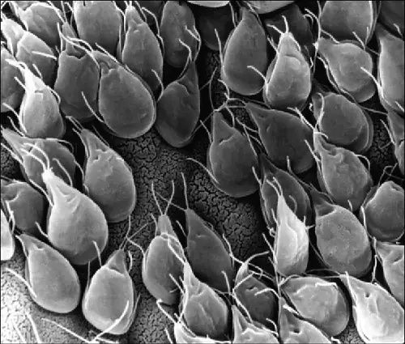
- Giardia lamblia
- Cryptosporidium hominis
- Cyclospora cayetanesis
- Entamoeba histolytica
24.6 Helminthic Infections of the Gastrointestinal Tract¶
15. What is another name for Trichuris trichiura?
- pinworm
- whipworm
- hookworm
- ascariasis
Answer
B
16. Which type of helminth infection can be diagnosed using tape?
- pinworm
- whipworm
- hookworm
- tapeworm
Answer
A
Fill in the Blank¶
24.1 Anatomy and Normal Microbiota of the Digestive System¶
17. The part of the gastrointestinal tract with the largest natural microbiota is the _________.
Answer
Large intestine or colon
24.2 Microbial Diseases of the Mouth and Oral Cavity¶
18. When plaque becomes heavy and hardened, it is called dental calculus or _________.
Answer
tartar
24.3 Bacterial Infections of the Gastrointestinal Tract¶
19. Antibiotic associated pseudomembranous colitis is caused by _________.
Answer
Clostridioides difficile
24.4 Viral Infections of the Gastrointestinal Tract¶
20. Jaundice results from a buildup of _________.
Answer
bilirubin
24.5 Protozoan Infections of the Gastrointestinal Tract¶
21. Chronic _________ infections cause the unique sign of disease of greasy stool and are often resistant to treatment.
Answer
giardia
24.6 Helminthic Infections of the Gastrointestinal Tract¶
22. Liver flukes are often found in the _________ duct.
Answer
bile
Short Answer¶
24.1 Anatomy and Normal Microbiota of the Digestive System¶
23. How does the diarrhea caused by dysentery differ from other types of diarrhea?
24.2 Microbial Diseases of the Mouth and Oral Cavity¶
24. Why do sugary foods promote dental caries?
24.4 Viral Infections of the Gastrointestinal Tract¶
25. Which forms of viral hepatitis are transmitted through the fecal-oral route?
24.5 Protozoan Infections of the Gastrointestinal Tract¶
26. What is an O&P exam?
24.6 Helminthic Infections of the Gastrointestinal Tract¶
27. Why does the coughing up of worms play an important part in the life cycle of some helminths, such as the roundworm Ascaris lumbricoides?
Critical Thinking¶
24.3 Bacterial Infections of the Gastrointestinal Tract¶
28. Why does use of antibiotics and/or proton pump inhibitors contribute to the development of Clostridioides difficile infections?
29. Why did scientists initially think it was unlikely that a bacterium caused peptic ulcers?
30. Does it makes a difference in treatment to know if a particular illness is caused by a bacterium (an infection) or a toxin (an intoxication)?
24.4 Viral Infections of the Gastrointestinal Tract¶
31. Based on what you know about HBV, what are some ways that its transmission could be reduced in a health-care setting?
24.6 Helminthic Infections of the Gastrointestinal Tract¶
32. Cases of strongyloidiasis are often more severe in patients who are using corticosteroids to treat another disorder. Explain why this might occur.
Adapted from Microbiology by OpenStax, licensed under CC BY 4.0. Access the original for free at openstax.org. Changes: converted to the web reading format of The Open Book Project.
-
Hans-Peter Horz and Georg Conrads. “Methanogenic Archaea and Oral Infections—Ways to Unravel the Black Box.” Journal of Oral Microbiology 3(2011). doi: 10.3402/jom.v3i0.5940. ↩
-
Hiroshi Maeda, Kimito Hirai, Junji Mineshiba, Tadashi Yamamoto, Susumu Kokeguchi, and Shogo Takashiba. “Medical Microbiological Approach to Archaea in Oral Infectious Diseases.” Japanese Dental Science Review 49: 2, p. 72–78. ↩
-
Paul W. Lepp, Mary M. Brinig, Cleber C. Ouverney, Katherine Palm, Gary C. Armitage, and David A. Relman. “Methanogenic Archaea and Human Periodontal Disease.” Proceedings of the National Academy of Sciences of the United States of America 101 (2003): 16, pp. 6176–6181. doi: 10.1073/pnas.0308766101. ↩
-
Jaya Sureshbabu. “Shigella Infection Workup.” Medscape. Updated Jun 28, 2016. http://emedicine.medscape.com/article/968773-workup. ↩
-
Centers for Disease Control and Prevention. Salmonella. Updated August 25, 2016. https://www.cdc.gov/salmonella. ↩
-
Kaci Hickox. “Stop Calling Me the ‘Ebola Nurse.’” The Guardian. November 17, 2014. http://www.theguardian.com/commentisfree/2014/nov/17/stop-calling-me-ebola-nurse-kaci-hickox. ↩
-
Centers for Disease Control and Prevention. Cholera—Vibrio cholerae Infection. Updated November 6, 2014. http://www.cdc.gov/cholera/general. Accessed Sept 14, 2016. ↩
-
Centers for Disease Control and Prevention. “Helicobacter pylori: Fact Sheet for Health Care Providers.” Updated July 1998. http://www.cdc.gov/ulcer/files/hpfacts.pdf. ↩
-
T. L. Cover. “The Vacuolating Cytotoxin of Helicobacter pylori.” Molecular Microbiology 20 (1996) 2: pp. 241–246. http://www.ncbi.nlm.nih.gov/pubmed/8733223. ↩
-
Martin J. Blaser. “Disappearing Microbiota: Helicobacter pylori Protection against Esophageal Adenocarcinoma.” Cancer Prevention Research 1 (2008) 5: pp. 308–311. http://cancerpreventionresearch.aacrjournals.org/content/1/5/308.full.pdf+html. ↩
-
Ivan F. N. Hung and Benjamin C. Y. Wong. “Assessing the Risks and Benefits of Treating Helicobacter pylori Infection.” Therapeutic Advances in Gastroenterology 2 (2009) 3: pp, 141–147. doi: 10.1177/1756283X08100279. ↩
-
Faith Rohlke and Neil Stollman. “Fecal Microbiota Transplantation in Relapsing Clostridioides difficile Infection,” Therapeutic Advances in Gastroenterology 5 (2012) 6: 403–420. doi: 10.1177/1756283X12453637. ↩
-
Caleb K. King, Roger Glass, Joseph S. Bresee, Christopher Duggan. “Managing Acute Gastroenteritis Among Children: Oral Rehydration, Maintenance, and Nutritional Therapy.” MMWR 52 (2003) RR16: pp. 1–16. http://www.cdc.gov/mmwr/preview/mmwrhtml/rr5216a1.htm. ↩
-
Elizabeth Jane Elliott. “Acute Gastroenteritis in Children.” British Medical Journal 334 (2007) 7583: 35–40, doi: 10.1136/bmj.39036.406169.80; S. Ramani and G. Kang. “Viruses Causing Diarrhoea in the Developing World.” Current Opinions in Infectious Diseases 22 (2009) 5: pp. 477–482. doi: 10.1097/QCO.0b013e328330662f; Michael Vincent F Tablang. “Viral Gastroenteritis.” Medscape. http://emedicine.medscape.com/article/176515-overview. ↩
-
Centers for Disease Control and Prevention. “Rotavirus,” The Pink Book. Updated September 8, 2015. http://www.cdc.gov/vaccines/pubs/pinkbook/rota.html. ↩
-
World Health Organization. “Rotavirus.” Immunization, Vaccines, and Biologicals. Updated April 21, 2010. http://www.who.int/immunization/topics/rotavirus/en/. ↩
-
Centers for Disease Control and Prevention. “The ABCs of Hepatitis.” Updated 2016. http://www.cdc.gov/hepatitis/resources/professionals/pdfs/abctable.pdf. ↩
-
Centers for Disease Control and Prevention. “Hepatitis B FAQs for Health Professionals.” Updated August 4, 2016. http://www.cdc.gov/hepatitis/HBV/HBVfaq.htm. ↩
-
Centers for Disease Control and Prevention. “Cyclosporiasis FAQs for Health Professionals.” Updated June 13, 2014. http://www.cdc.gov/parasites/cyclosporiasis/health_professionals/hp-faqs.html. ↩
-
Centers for Disease Control and Prevention. “Parasites–Ascariasis.” Updated May 24, 2016. http://www.cdc.gov/parasites/ascariasis/index.html. ↩
-
“Roundworms.” University of Maryland Medical Center Medical Reference Guide. Last reviewed December 9, 2014. https://umm.edu/health/medical/altmed/condition/roundworms. ↩
-
Nancy Craig. “Fish Tapeworm and Sushi.” Canadian Family Physician 58 (2012) 6: pp. 654–658. http://www.ncbi.nlm.nih.gov/pmc/articles/PMC3374688/. ↩
-
Centers for Disease Control and Prevention. “Anisakiasis FAQs.” Updated November 12, 2012. http://www.cdc.gov/parasites/anisakiasis/faqs.html. ↩